Week One: Introduction to JavaScript 1
Week Two: Reacting to Your Audience 2
Week Three: Arrays and Looping 2
Week Four: Validating Form Data 3
Link to All of the Code for Week One 10
The Document Object Model (DOM) 10
Week 1-02. DOM Review with Object Oriented Programming 10
Trying to Create and Debug Your Own Output 31
Week 1-06. Operators & Expressions 48
Link to All of the Code for Week Two 54
Week 2-03. Folder Structure / Organizing Your Code 67
Mastering Events and Functions 79
Week 2-05. Code With Me – Events 80
Link to All of the Code for Week Three 102
Tabindex and Accessibility 104
Using JavaScript with Attributes 104
Week 3-01. JavaScript Arrays 106
Week 3-02. Code With Me – Arrays 112
Advanced Coding Techniques 115
Week 3-03. JavaScript Iteration 115
Week 3-04. Flow of Control 122
Week 3-05. Code With Me – Combining Loops & Conditionals 132
Week 3-06. Advanced Conditionals 136
Using JS for Interactive Images 148
Link to All of the Code for Week Four 149
Week 4-02. Simple Validation 160
Week 4-03. Comparing Two Inputs 166
Week 4-04. Checkboxes & Radio Buttons 169
The History of "Debugging" 172
Link to All of the Code for Week One 172
The Document Object Model (DOM) 173
"Cool Stuff" - Friend or Foe? 182
Final Project: Optional Submission Gallery 185
Optional ungraded submission 185
Submitting your file to the Gallery 185
If you want to take your website to the next level, the ability to incorporate interactivity is a must. But adding some of these types of capabilities requires a stronger programming language than HTML5 or CSS3, and JavaScript can provide just what you need.
With just a basic understanding of the language, you can create a page that will react to common events such as page loads, mouse clicks & movements, and even keyboard input. This course will introduce you to the basics of the JavaScript language. We will cover concepts such as variables, looping, functions, and even a little bit about debugging tools.
You will understand how the Document Object Model (DOM) is used by JavaScript to identify and modify specific parts of your page. After the course, learners will be able to react to DOM Events and dynamically alter the contents and style of their page. The class will culminate in a final project - the creation of an interactive HTML5 form that accepts and verifies input.
This is the third course in the Web Design for Everybody specialization. A basic understanding of HTML and CSS is expected when you enroll in this class. Additional courses focus on enhancing the styling with responsive design and completing a capstone project.
If you haven't used a traditional programming language before, this first week is key. Before we begin with the how, we will talk about the why, mainly why we want to use JavaScript. The main reason is that it is very easy for JavaScript to work with the DOM. And easy is always a great way to start. Speaking of starting out, it is also always more fun when our code actually does something we can see, so we will jump quickly into different ways we can generate output. It won't be flashy yet, but it will be a great way to get your feet wet with traditional programming. After that we go back to the basics of how a computer uses data. We begin with variables, expressions, and operators.
Syllabus
Introduction* (1)
Link to All of the Code for Week One
The Document Object Model (DOM)
DOM Review with Object Oriented Programming* (2)
Output* (3)
Trying to Create and Debug Your Own Output
Variables* (4)
Data Types* (5)
Operators and Expressions* (6)
Discussion - CodePen
Materials
The History of "Debugging"
Summary: Week One
If you have written HTML code in the past, hopefully you have fallen into the great habit of validating your code -- making sure that you close all of your open tags. There are other rules that you may or may not have been following as well, for instance the importance of using each id attribute only once per page. This is called writing "clean" code. The reasoning and importance of following these rules becomes clear as we begin to manipulate the different components of your webpage based on the actions of the person interacting with your page. In particular you will learn about the JavaScript Mouse Events and Touch Events. This week's materials will end with a photo gallery example that you can create along with me.
Reading: Link to All of the Code for Week Two
Reading: Functions
Functions* (1)
Code Placement* (2)
Reading: Organizing Your Code
Folder Structure / Organizing Your Code* (3)
Events* (4)
Reading: Mastering Events and Functions
Code With Me – Events* (5)
Reading: Just a little note before the next video
"this"* (6)
Reading: Homework Time!!
Photo Gallery* (7)
Summary: JavaScript Interactive Photo Gallery
This week we will delve into more complex programming concepts: arrays and looping. Arrays allow you to represent groups of related information. Looping provides efficiency and flexibility to your programs. Using both we will expand upon the photo gallery example.
Reading: Link to All of the Code for Week Three
Reading: A JavaScript Cheat Sheet
Reading: Arrays
Video: Code With Me – Arrays* (2)
Reading: Advanced Coding Techniques
Video: JavaScript Iteration* (3)
Video: Flow Of Control* (4)
Video: Code With Me - Combining Loops and Conditionals* (5)
Video: Advanced Conditionals* (6)
Video: Common Errors* (7)
Summary: JavaScript Review
This week we will put a number of the concepts from this course together to tackle a new project - creating and validating input entered into an HTML5 form. Forms are extremely common elements used to input and send data to via a webpage. We will look at how you can use JavaScript to add options to your forms, to pre-fill data based on previous input, and even to check that passwords match.
Reading: Link to All of the Code for Week Four
Reading: Introduction to Forms
Video: Simple Forms* (1)
Video: Simple Validation* (2)
Reading: "Cool Stuff" - Friend or Foe?
Video: Comparing Two Inputs* (3)
Video: Checkboxes and Radio Buttons* (4)
Reading: Using Forms on Your Site
Reading: More Code Examples
Video: Conclusion* (5)
Reading: Intro to JQuery
Reading: Post-course Survey
Reading: Keep Learning with Michigan Online
Summary: Autocomplete with JavaScript
Welcome to Introduction to JavaScript, taught by Colleen van Lent!
This course is an introduction to the use of the JavaScript programming language to add some interactivity to your website. This course is meant for people who are comfortable using HTML and CSS, but are new to programming.
What is the benefit of learning JavaScript? HTML and CSS are not programming languages and therefore they are not very powerful. You can do some really interesting things with the new tags and properties, but there are limitations. JavaScript, on the other hand, allows you to add complex levels of interactivity to your pages. And unlike some other programming languages, JavaScript works really well with the DOM structure of web pages.
In the next few weeks, we will talk about how you can add pop-up boxes (not always a good idea), change the structure and style of your page when special events happen (sometimes a good idea), and validate form data (always a good idea). To be completely honest, there are so many things that we can do with JavaScript we can't possibly cover them all in the time we have. We will focus on the following:
How to create output with JavaScript. This could be with pop up boxes, adding content to your page, or sending information to the browser console to help you fix ("debug") your code.
How JavaScript uses variables and data types to save your data. This is a powerful and important concept because it lets you save information to use over and over again.
How to write functions to react to events. You will be able to write code that only runs when special events occur. Because we want to add interactivity, we will make sure to use special DOM events that react to mouse clicks and movement.
Why arrays are an important part of any programming language and how to use them to store multiple pieces of information in one variable.
How to create and validate HTML forms.

Hi everybody. Today I'm going to introduce you to the JavaScript programming language. JavaScript has a lot of uses, but we're really going to focus on how we can use JavaScript to add interactivity to your web design pages. While I'm assuming that you're new to programming, there is an expectation that you know HTML 5 and CSS. If you don't, you're really going to want to go back and review those two areas because everything we with JavaScript in this class is based on web programming.

Let's get started. If you've done HTML, if you've done CSS, you haven't necessarily done what we call real programming, at least not what us computer scientists call real programming. Instead, we're going to be talking in JavaScript about really definite data manipulation, and in order to do that, there are a few things you need to learn how to do. The first is, you want to learn how to store variables. You're going to want to learn how to set decision points, you're going to be looping and writing functions, you're also going to be really getting in-depth with how you can get data from the browser.
Did you know that every time you load a web page, you can actually get back the title of the page, the URL of your page, a lot of different information that you know is there, but you can't always see at first glance?

The other thing we can do, which is really where it gets a little bit more exciting, is that we can manipulate the DOM that the browsers use to create webpages. The DOM is the Document Object Model, it's what builds up a webpage. If you're a little fuzzy, it's been a little while, don't worry. We're going to review the DOM in a future lecture.

Let's start with variables. In computer science, we use variables in order to store information. Your program isn't going to be very exciting if you ask somebody their name and then you can't actually use that name later on. You're going to find out how to get information from the user, and then store it so you can use it later.

We're also going to add decision points. Things are much more interesting when they don't do the same thing every single time. We're going to write a little bit of code that can help the program decide in some cases I want to do this and in other cases, I want to do that. We call this decision points.
We can also do looping. Looping is really powerful. As your programs get bigger, there's certain things you'll want to do over and over again, but you really don't want to write code over and over and over again. In computer science, we use something called looping to control the program and say, see that little bit of code over there? We want to do that five times, or ten times, or we want to keep doing it until the human does what we want them to do.

Otherwise, you sometimes have to decide at run time how many times you want to run some code. If you know that you want someone to do something five times, you can be very specific about it. Programming gives you so much flexibility in how you want your code to run.

Next in this course we're going to talk about functions. Functions are one, are a way for you to reuse your code multiple times, but you only have to write it once. The other really great things about functions is that other people can write code and you can use it, and you don't even need to know how it works all you need to know is, what did you call your function? Great. I want to use that.

Finally, we're going to talk about manipulating the dominant class. JavaScript can actually go through your web page and search and find certain elements. It can add new elements. It can delete other elements from the DOM. So, think about when you're filling out a form on a web page with your credit card information. There are always these little buttons that you can click that can say use the same billing address for shipping. Things like this can make your page much more usable.
You can also react to mouse clicks, page reloads, and other actions that the user might have. This is where it really gets fun. We're going to start with the basics, the variables, the loopings, and then we're going to have fun manipulating the DOM.

A major component of learning any new programming language, or I guess, really any language at all, is that the key is practice and repetition.
The other thing that you really need to understand, and I'm actually hoping that you'll embrace, is that you need to expect that you're going to make mistakes. If you aren't making mistakes constantly, you aren't really learning in this class. Join us, we're going to do a lot of fun stuff. But I promise, I'm going to go slow, explain what I'm doing step by step, so that you can come along with me and start adding some interactivity to your pages with JavaScript.
http://codepen.io/collection/nLPkgP/
Here is a link to a collection of all of the Code for Week One. (There may be a few extra files in there as I play with new examples.) Each individual file is also linked above. I find that it can be annoying to use CodePen for the first few lectures since it causes a lot of pop-up boxes. Don't worry, we move away from that by Week Two.
Even if you use CodePen, I encourage you to practice writing the code on your own. For now, I put complete examples in CodePen, but as time goes on, I will remove some of the commands to link the code together. You will need to work on that part on your own..
https://developer.mozilla.org/en-US/docs/Web/API/Document_Object_Model/Examples
One of the reasons you want to learn about JavaScript is that it works so well with the structure used to create HTML documents. Every webpage can be broken down into a mathematical tree structure called the Document Object Model (DOM). Each HTML tag is a node in the tree and these nodes have all types of different attributes, such as text, background color, width, etc.
With JavaScript it is easy to write code that basically says "I want to grab that part of the webpage and change it." In this lecture I review the DOM and talk about how it is related to JavaScript. There is no code associated with this lecture, but if you check under the resources, I do include a link to site where you can find specifics on the DOM.

Today we're going to be talking about the DOM, or the document object model.

As you may or may not remember, every webpage is built upon this DOM. And what it means is that our pages are structured like a tree. We have one parent and possibly a few children. And the page as you add more and more things it just gets deeper and deeper. Nodes have different properties, methods, and events.

Let me draw you a quick example and then we'll talk about how we can use JavaScript to manipulate this DOM. Every web page is built like a tree. We start up here and we've got our document and then you're going to have, hopefully you remember your head and your body, all right?
Well, what kind of things are in your webpage? You might have a div and another div. And then the third div we're going to give more specific. We'll say, well this div has three paragraphs and one of those paragraphs has the id equals 3. What does this mean? Why do we care that the pages built like a tree?

This means that JavaScript can actually go in and it can look and say, you know what, I want to find the second div. I found this thing right here. I want to find the specific paragraph that had the id equals 3. It's right here.
Because JavaScript can find these different elements in your page, it can also change what we call are the attributes of that page. For instance, that paragraph might have a background color or a special kind of font, the paragraph also has text in it. How can we go in there and how can we change that text? This is what we're going to be using JavaScript to do in this course.

Again, we've got that the page content is represented by the DOM. The scripting language JavaScript uses the DOM to interact with the document. How does it do that, though? How does it know how to interact?

Well, the JavaScript has something called an API, or an application programming interface. You may have heard people talking about APIs in the past. Programmers tend to do that. They're like, oh, what API are you using? Or what API are you using? And it can sound kind of intimidating if you've never used one before. An API is just a way for someone else to write code, and then you to use it, to interact with their programs.

No matter which browser you're using, Firefox, Chrome, different things like that. And no matter which scripting language you're using, in our case we're going to use JavaScript. The API is always the same. The way you interact is always going to be the same. And this is really important, because it's nice to know that if you learn this you won't have to learn something different later on.

Let's talk about some of these DOM objects or element as we call them. The first one, kind of the root of your entire page, is the document. If you wanted to, you could find out what the document URL is, what the height of the document is, all the different links in the document, the document background color. If there's an attribute you've used to style your page, you can find it using JavaScript in the API.
The next kind of concept we talk about is an element, or a node in the tree. If you remember, I drew that you can have the body, and inside the body you could have divs, paragraphs, links, list items. Each one of those is a node in the tree. And you can find it using the API.
Sometimes, though, it can be a little bit more complicated than just returning a single element. What if you wanted to find all of the children of one particular ordered list, or un-ordered list? Well, in that case, instead of returning a single element, sometimes it's returned a node list, or an array of elements.
For instance, there's this one API that we can use, called document that get element by tag name, and you can give it any element you want. So, p, or a list item. Well, there's a really good chance that there's more than one paragraph in your page. You return all of them together. This is how we're going to be using arrays later in the course, probably around week three, to help you understand how to deal with an overload of information.
Finally, the important thing I need you to remember is that in the Dom there are attributes. You have your elements and every element probably has one or more attributes that go with it. So, an image for image element, it would have a source, it would have alt text, it would have width, and a style, different things like that.
Attributes are the kind of cool things that we want you to be able to change to make your page look different.

Okay, so if you understand that the page is made up of documents, and elements, and attributes, I'm hoping this side will make a little bit more sense. For a view of a document, you can say you know that I want to get a certain element using the id. You can also say oh I've got this document grab all the elements that happen to be a paragraph or a link. Now this one's new, this idea of element.inner.HTML.
A paragraph is an element and you assume there is some sort of text inside that paragraph. Well, if you've been coding HTML or CSS, you probably might be thinking, when I use the paragraph tag, I never saw an inner HTML attribute. You wouldn't have. This is part of the API, but you can use this to change the content of any element. You can also change the element style, and you can even add additional attributes to any element that the DOM can grab.
Finally, an interesting one that you may or may not use, is you can even remove attributes. If something has a certain color, you can get rid of that if you want.

I know that there was a lot I went over in this slide that maybe didn't make a lot of sense to you yet. That's okay. That's the point of this class. It's so that the end of this course, you can go back to this slide, and you can say, oh great, I've mastered this. I'm beginning to understand that learning JavaScript doesn't mean that I know how to code everything by hand, it means that I know that there's something called an API and I know how I can use it to make my page a little bit better.
We're going to start slow, and the most important part to me is for you to feel comfortable searching for information on the web. I'll be able to teach you a little bit, I can show you some of the main methods and API's and different things like that. But I want you to code with me and then make sure you go off and you try to change things just a little bit until your confidence is really up there. Good luck.

Hi everybody. Today, let's start coding a little bit to see some of things we can do with JavaScript. Maybe, using HTML 5 or CSS 3, you've added what we call a little bit of interactivity to your page. There's the details tag if you're using HTML. There's the hover property or pseudo class if you're using CSS 3 and you were able to make little things change in your page by reacting to what the user was doing.

But typically, that's not really what we call interactivity when we're talking about true web design because these new elements and the pseudo classes can only go so far. They tend to be temporary changes.

So, what can JavaScript do that HTML and CSS can't do? Well, the one that I'm going to talk about today is that they can read and write HTML elements. Now that's not the only thing they can do. We're going to be talking about different things like reacting to events and validating data and different things like that. But today, we're really going to focus on output.
Whenever you learn a new programming language, one of the first things you want to do is find out how can I make things happen. How can I have things print out to the screen or generate some sort of output.

Well, JavaScript doesn't have a built-in print function. Instead, you have four or five different ways where you can generate different things. Data is typically displayed via alerts, prompts, document.write, innertHTML or reading information directly to the console. Let's talk about each one of these.

You've all seen alert JavaScript alert boxes. Because many times, especially back maybe 10, 15 years ago, when you went to a page, people loved to have these little boxes pop up and say hey, welcome. Doing things like that. In JavaScript it's pretty easy. You can just use alert and then inside you put my message here. A few things just to point out right from the beginning.
Alert is a keyword. In your editor it should change some sort of special color. Inside the parentheses, and you need the parentheses, both beginning parentheses and end parentheses, is that you're going to have some sort of string and it should be inside quotes. It can be inside single quotes or double quotes. And then, the last thing is, to end in a semicolon. If you were to put this code right here inside your HTML, you can generate some output.

Let me show you an example. What I've done over here is I've created the HTML that I would need to generate an alert box. I've got my body tag, now this is new I have what we call is a script tag. The script tag tells the browser, oh wait, don't just print this out, I'm actually going to give you some JavaScript that I want you to run. And in this case, I have my code alert("Hello World").

If I were to run this, and I'm going to refresh it. You can see I get my little pop-up box. Now, if you're running this along with me at home, and you're not using Chrome, the box is going to look different. For some of you it's going to have the little Safari symbol, or the Edge, or Firefox.

That's okay, the important thing is that somewhere in here it says hello world. Now you might be click on the prevent this page from creating additional dialogues button. Don't do it. Because in this class we're going to be playing with alert a lot because it's a nice way for you to know if your code's working or not. Again, this is just a quick and simple way for you to generate output using the alert.

The next way we can generate output is using prompt. Prompt is very similar to alert, but it's slightly different in that it wants you to do more than just click OK or Cancel. It wants you to generate some sort of input to put in there. As you can see, the alert and the prompt look very similar. They've both got the key word, the parentheses, the semicolon and the string, but the way they act is very different.
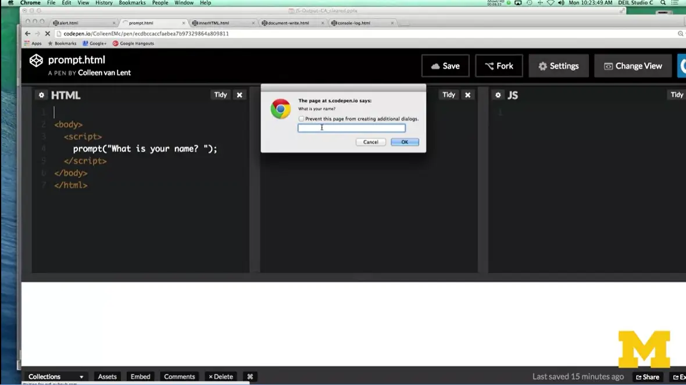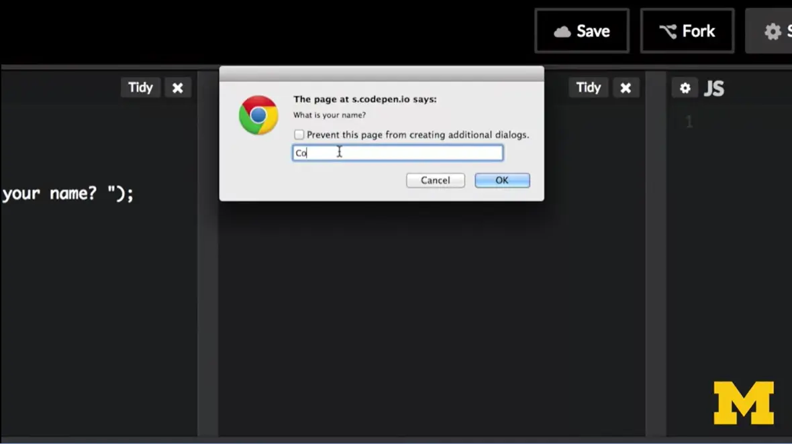
In this case when you run it, it's actually waiting for you to type something in. I can put in Colleen van Lent and hit OK. Now, don't get too excited. We didn't do anything with the stuff I put in. But, again, I'm just giving you some of the different options. So, you have alert and you have prompt and both of them generate some sort of box where you can display information, but nothing is actually showing up on the page. Let's switch to the general ways in which you can generate output to the screen.

One way, if you want something to be what we call permanent, to not just disappear once you hit okay, is to use what we call document.write. So again, I'm hoping that you're picking up on these ideas that we're using terms like document, and element, and different things like that. The way that document.write works is it goes through and it says, we want you to write something directly to the page. We want it to become part of the dom, we want it to become part of the page permanently. In this case I can't just use write. That won't work. Alert worked by itself, prompt worked by itself, but here you need to have document.write(). Same thing, hopefully you're seeing the pattern. Let's see when we add this.

Here you can see that inside the script tag, again, I have the document.write(). But instead of things popping up or asking us for input, it writes it directly into the screen.

Now I'm going to change something right here. Because I put h1 inside the quotes. If I get rid of that you can see this still works, but instead of being an h1 heading, it’s just regular old text. So, document.write is a way for you to generate output. But we need to realize that it is probably not the best way to do it.

Because sometimes if you're misusing it, you can overwrite other things that exist. So, document.write is something you just want to use when you're beginning and you don't know some of the more complex methods.

One of the more complex methods you can use is called innerHTML. And with innerHTML, you combine this with other functions that return elements. So, you can't just say innerHTML or element.innerHTML. You have to say, all right, what part of the page do I want to change? Oh, I want to change that particular paragraph, all right. But how do I grab that particular paragraph? Or remember we have these different APIs that can go and get things for us.

In this case, I have element which is hopefully we'll find something using the API that in your HTML equals time to learn JavaScript. I wanted you to recognize something right away. When we use document dot write alert and prompt we had parenthesis around the side, here. We don't have that anymore. Instead, we use an equal and we just have it ending with a semicolon. No parenthesis when you're using inner.HTML. How do you figure that out when you're coding? You don't. You just keep coding and practicing and after a while, it becomes second nature to you, all right?
When I talk about this kind of generic element, I didn't make it a color that's something that you need to grab using the API. Let me give you an example of something we can do using innerHTML.

Let's look at this, what I've done is I made an h1 heading and I've given it the id of test. I also have a paragraph element a little bit further down that just says, hey what happens if I'd messed with this code?

All right, so I want you to look as closely as you can. You might be on a small screen. You might not be able to see it. Is that in my h1 heading, I actually have the words tester, but if you look at the web page, it says Hello World. Well, how did I do that? It's pretty simple, actually. Because you can go in, and I can say document.getElementById. Test. It's going to grab, it's going to look through the page and go where, where can I find something that says ID equals test. There it is. All right, now I want to change whatever used to be in there and replace it with the words, Hello World. This is kind of what happens when this is a weird example, but all early examples are weird examples. Because you just want to get your feet wet.

But I did want you to look at what happens if I do this. Back from your days of learning CSS, you might remember that in general, you can expect to see multiple classes. But you're making this contract or rule that says, you really should see each ID only once.
JavaScript is expecting you to keep that rule. When you do something get element by ID, JavaScript thinks there's only one out there. I'm going to stop as soon as I find that one.

As you can see down here, it changed the first one it found. It didn't change the second one it found, okay? All right.

Let's go play with the last output method I have for you today. document.write and enter HTML. Write directly into the browser screen. What we have in this last option is something that doesn't write to the browser screen, but it does write to the browser console. Console dot log takes a message and says you know what, I want to store this information some place. But I want it to be something that not necessarily pops up and everyone can see.
The console's a place to see what's going on in your program during execution. If you haven't used the console before, you might not realize that it's even there. But I'm hoping you have when you were doing your CSS.

Let's take a look at this example. In my HTML up here, you can see that I have console.log Hello World. Nothing too exciting going on here.

But if you look at the actual browser, hm, it's not there. It doesn't show up like it did with document.ray. Where did it go? Well, it's actually in the Console of your browser. I'm going to go down here. I did inspect element, and I checked the Console. Oh, you can see Hello World showed up here.

What happens if I change the code to Hello World Too.
You’re sending yourself these little secret messages that can help you debug your code. You can log things, you can leave little notes for yourself, you can do debugging tests. You can even log the things that other people have been writing in. And so, this is a really handy tool if you want to do development but not let everyone see exactly what you are doing. We're going to come back to this example in just a second, but first I want to talk to you about why you should be utilizing the console by now, if you haven't.

The console does more than just take these print statements. It also provides debugging information for JavaScript, HTML, and CSS. By going in and looking at it, you're going to be able to help yourself become a much better programmer.

Let's take a look at just doing some debugging with the JavaScript. I'm going to go in here and I'm going to accidentally forget to put in my first quotes, all right. But if we didn't know that there's anything going on or that anything is supposed to show up.

You might not realize that there's a typo but inside the console, it'll show you pretty much along the way add, hey, anything in red means we found an error. So red lines usually means either you have a JavaScript error or you linked to a file that didn't exist. When I put it back in, no more red syntax error.
I really want to stress this to you right now. I need you to stop and make sure that you know how to access the console on your machine. One of the things that really helps other people help you is when you can pinpoint where exactly your code is going wrong. You might not know what's going wrong, but you’re saying somewhere in this line of code I'm getting an error. This kind of ability to help yourself debug is going to be critical to going on and advancing in this course.

If I'm going to ask you debug, I should probably tell you how you can debug. If you're using Safari, you're going to need to go to Preferences > Advanced. Once you go there, you should be able to check the Show development menu in menu box. And that will show you some of the different JavaScript errors and tools that you have available. In Google Chrome, you go to Developer, and then JavaScript Console. If you've been coding with me in the past, you know that my shortcut is always to right click, inspect element, and boom, there it is for you. If you're using Firefox, you want to go to Tools and then Console. Firefox is, believed by many to be the best browser to use when you're doing debugging for JavaScript. If you're using Edge or Internet Explorer, typically hitting F12 will bring up the different JavaScript and development tools that you can use to improve your page. All right, so let's review.

Right now, we're doing really simple things, and I understand that. It's not that exciting to just print things out to the screen or have little pop-up boxes coming up. But we need to do these small steps to help you gain the confidence to go on and write more complex bits of code.
As you learn more, the power that you're going to have to manipulate the dom is really going to get quite impressive. But for now, just make the small mistakes, learn how to debug the small mistakes, and then that way you'll be able to build your confidence slowly. Good luck.
In the previous lecture I showed you how you can create output using JavaScript. My code examples are all on CodePen and I have included a link to each of the examples in the Resources section of that module. With CodePen you get your own copy of my code that you can change. I encourage you to experiment with that code, or even better try recreating it yourself using an editor such as TextEdit, Sublime, or Notepad++.
If you are using a laptop or desktop to do your coding, make sure to use the console window of your browser to look for errors in your code. In programming, looking for and correcting errors is called "debugging." Below I have a screen shot of my code, the (empty) browser, and the error message I get from the Chrome console. Don't worry if error message itself doesn't make sense, that is something that comes with time, the important part is to look for the line number, in this case line 9. The console will always try to tell you about where it ran into a problem. In this case, I didn't include the quotes to end the message for the alert.

https://codepen.io/ColleenEMc/pen/jbYEEW

Hi, everybody. Today we're going to learn about JavaScript variables. An important part of programming is learning how you can save data. Because by saving data, you can reuse it and give you program that's impression that's kind of intelligent and knows the user very well.

In JavaScript, data is stored in what we call variables, and it's very easy to use variables in your programming. The only important part is that you need to tell the computer very specifically, hey, I need you to save something for me. And this is how we do it. We start by using the keyword var, V-A-R. When we're using the editor, hopefully this will show up in some special color that indicates, ooh, this is a special word to the computer. Next, you need to give your variable a name. Now, I chose the name “name” here, but you can imagine it being age, first name, last name, dob for date of birth. The important thing is that it should be special to you, but not special to the computer.

How does this work? When you declare a variable, you're basically telling the computer, let's stop talking in human talk and let's talk computer talk. So here, once you said var name, it reserved a space in memory. It said oh, okay. I know that I'm talking about position 11011, blah, blah, blah, blah, blah. But Colleen doesn't want to talk about those numbers, she wants to use the actual variable name. So, whenever she talks about name, I know she actually wants me to use the value, Christopher. There might be some variables that you've declared, such as age, that you haven't put anything in there yet.
The important thing to know is that computers aren't smart. Computers are just trying to give you a way to avoid remembering big long numbers and instead using English words.

When you come up with your variable name, there's a few rules that you need to follow. Every variable name can have letters, digits, underscores, and dollar signs in it. Now to be honest, I don't put dollar signs in my JavaScript variable names because it can be very confusing, particular for those people who know multiple programming language. I tend to stick to letters, and sometimes digits and underscores.
When you do come up with a variable name, even though numbers are allowed, your variable can't start with a number. That number has to be somewhere else in the middle or the end.
Also, variables are case-sensitive. What that means is that lower case name is not the same thing as name with a capital N or name with a capital M or name on all capitals. To the computer these are all different variables. So, just be careful when you're programming and be consistent.
Also, this last one isn't a rule so much as a suggestion that I want to convey to you. Make your variable names meaningful or mnemonic as the computer science term we use. That means, if the variable is storing someone's name, call it name. If it's storing age, call it age. You could get away with calling it 'yyy' or 'bbb', just don't do it. Okay? Taking a little bit of time to give meaningful names will save you a lot of heart ache later.

If you're going to go to the trouble of declaring a variable and telling the computer to save a spot in memory for it, it's pretty silly if you don't then use your variable. And what I mean by use it, is you should assign some sort of value to it.
When we assign things in computer science, we use what we call the equal, or assignment operator. So, it looks like an equal sign, but we call it assignment, because what we're doing is we're not saying hey, are these two things the same, we're saying take the value and store it into the variable.
So here I have var name, and instead of just leaving it at that, I say, hey, I want you to store the name Colleen in there, all right.

This is where when we start talking about assignment statements, I refer to LHS and RHS. I mean left-hand side and right-hand side of statements. The left-hand side should always be the variable, alright so this is going to be in our case name or some sort of element, something that we want to change. The right-hand side is going to be that new value that will be stored in the variable. Sometimes, the right-hand side can be pretty long and complex.
Right here would be an example where I'm just having, I declare my variable, and then later I want to update it. I say, name equals Colleen. This works really well.

What I need people to avoid is doing something along this line, where they switch the left-hand side and the right-hand side. Mathematically, if you're a math major, this makes perfect sense and it's the same thing, but it's not okay in programming. Always put the variable on the left-hand side.
All right, so I'm going to show you a few examples of how you might use a variable. If you remember when we talked about output, one way that we were able to produce output also was a way to generate input, and that was the prompt.

When you use the prompt, it's waiting for you to type something in and when you type it in, it's going to store that in the name. Now can we use that whenever we want to? We can say document dot write name and we'll promote to the screen. Next, we can use another variable and say hey, I want you to use this JavaScript function called date. And date is going to return what the current date and time is, right now when you're looking at the page. Then you can write that information out. You can even use more from the API saying, you know what? I want to know where this window is. What's the location of this window? And you can write that out as well.

Let's look at a quick example of how we can use that. Let's start with the simple code we used before when we were learning about prompts.

Only now, I want to combine it with a variable, so I am going to go in here and do var, and I'm actually just going to call it nm. The reason I'm doing that instead of name is because I really want to make people realize that the name you give your variable. Doesn't really matter, it can be anything you want. Just because I call it name, doesn't mean you have to.

And as soon as I did this, the prompt statement showed up, and I put in Colleen. Great, it worked, but we didn't do anything with it. Let's add a bit more code. Now I am going to comment out this line. You can see why, because otherwise it'll keep asking us to prompt things. We'll comment that out when we're done. All right.

I have this variable called name, now I can do something like document.write nm. I can also do Console.log(nm). If you wanted to you could even put in alert(nm). Let's put this back in. Might want to edit all my typing out. What is your name? Well, it is Colleen.

All right, so the alert popped up, but why didn't the document.write work? This is a good question, and this is actually an example where I can go in, that's what was going on.

It was actually waiting for me to hit okay. When it was all done, it went in and it printed out my name. This is a really simple, quick example.

Let's do one that has a little bit more going on with it. All right, in this case we're going to talk a little bit more about how you can add different things together, and how you can assign your variables using more than just prompts. In this case, I declared a variable. We're going to ask for the name. I write out the name. I write out the name twice actually. Once with my name and then another time with an H1 heading. And then I just wanted to show you that you could also grab other information from the document, itself, such as the URL and the title.

First thing I'm going to show you is, it says null and null. And that's kind of weird, and it might happen to you and it might not. The first thing I wanted to print out was my name, but I didn't type anything in the prompt. When the JavaScript doesn't know what to do, when it doesn't know what value should have been in there, it's going to assign it a value of null.

Let's run this one more time. I'm going to put in the name Christopher just in case someone else named Christopher is reading this and they can feel special. But now you can see it printed out Christopher, the URL, and the title of my page.

Variables are a key component of really doing any type of programming language at all. We're going to be using them throughout this entire course, so I need you to practice them and feel comfortable using them. Go into the code that I have on CodePen or online and change it, and see if what you do does what you expect it to do. You might create some errors and that's okay. That's a great practice using things that just consult that log. The most important thing is I want you to understand how variables work, so that you can use them throughout the rest of the course. Good luck.

Once you realize that computers store all of the information using variables, the next step is to start to learn about the different data types used in the JavaScript programming language.

If you look here in this example, you can see that I've got variable name equals prompt, what is your name. So, it's expecting me to type in probably something like Colleen or Chris or Becca, something along that line.
In the next example, we have variable name equals Date. This is not a string. This is something that actually can be quite a bit longer and is very complex. You might also have variable name equals window.location. If I wanted to in JavaScript, I could even say name equals 12. Doesn't make any sense but there's nothing stopping me from doing it. In each of these examples, name would have what we call a different type. Things that are stored in the computer are completely different.

In computer programming languages, computers tend to have a single type. In JavaScript, that's fine, a variable can only be one type, but throughout the course of the program, it can switch from being a program to characters, back to a number to something else that's completely complex. Let's talk about what these types are in JavaScript and how we can represent them.

The first type we're going to talk about is number, and it's pretty straightforward, it's simply any type of numerical value that you want to store. This can be with or without decimals. JavaScript doesn't care if it's 2 or 2.0 or 2.6785, it's all the same.
In this example, I went in and I said you know what, I have this variable called width and I'm going to set it using window.innerWidth. This is pretty cool actually if you're trying to do something interesting in CSS because you can find out how wide the window is and then use that information to update other things.
My next example is I have var pi, which is equal to 3.14. In this case, I hard coded it to something. In both cases, it's storing a number, but in the different cases or one, it's going to be, normally would be an integer or a whole number, and the next time it has decimals.

The next type is called String. String is simply a collection of characters such as letters, numbers, punctuation, spaces, basically anything you can type into the keyboard.
To create a string, you have to put the value in quotes. Now, these can be single quotes or double quotes. And I want to be very clear here that in PowerPoint it's drawn the quotes as kind of forward and forward. Make sure you don't copy and paste and instead you do the quotes directly from your keyboard because the slant does matter. In this case, I've done var location = window.location. Because it happens to be that that attribute is a string or in my second example once again, I've just hardcoded it to something you might expect.

The third data type is Boolean. In programing, a boolean value is something that is either true or false. It doesn't have numbers to it or strings, it's very straightforward. In this case, I might have my variable status equals false, this is again called hard coding it, or in my program if I want to do something based on whether or not the window is open or closed. I can set it dynamically right here. The important thing to know is that status and window status can only be true or false. Those are the only two options.
Later, we're going to learn how to write our own boolean expressions to check to see if things are true or false. And that can add really a lot of power to your page.
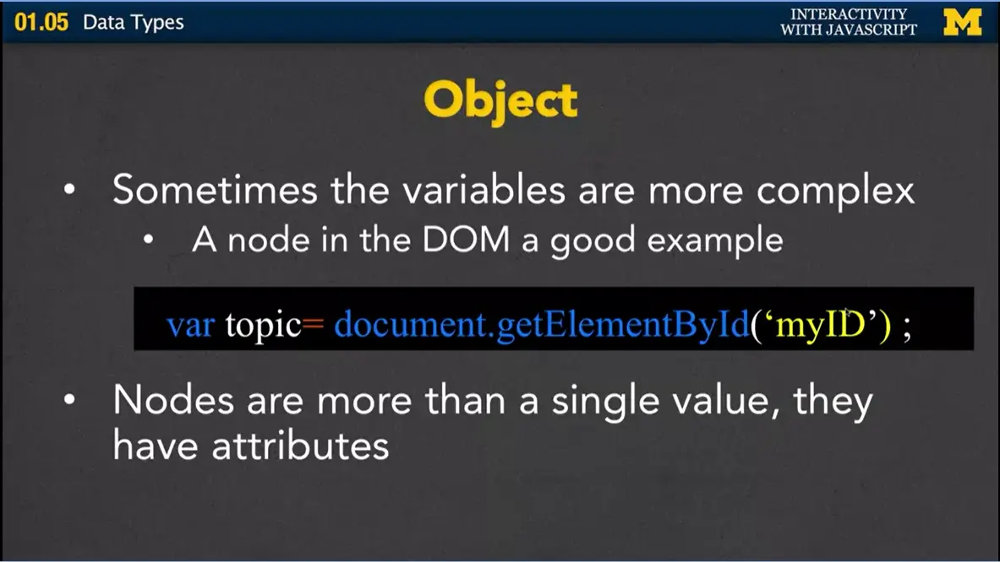
The next data type is called object. Because sometimes the variables or the nodes are more complex than just a number or couple characters. A node in the DOM would be a really good example. If you think about a paragraph element to it, paragraphs are not just a number or a string, there are a lot of different things that go into it. Here I might have var topic = document.getElementById('myId'). If I wanted to print out what topic is now, something like document.RightTopic. I would get something that pretty much looks like junk because it's an object, and objects can only read illegibly using things like attributes.
Using those attributes, we can go in and we might be able to say something along the lines of write out topic.style, topic.innerHTML. Different things like that can show us really the attributes or the string's numbers that make up objects.
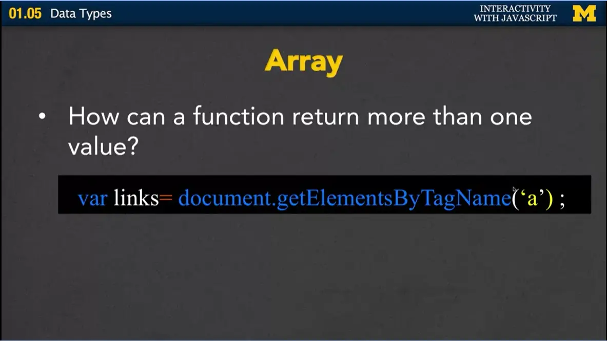
Finally, the last type we're going to talk about is array, because in some cases a function might want to return more than one value. We've seen how the API can return something complex, like an object that could be a paragraph, or a div, something along that line. What if it needs to return multiple things?
Here I have var links = document.getElements. Not element, but elements, ByTagName('a'). We're going to go in, it's going to search the entire document, and find all the hyperlinks in the page. Well, that's certainly not going to return just a single number, or a bunch of strings, or even a single object. Instead, it needs to return a whole collection.

Arrays store these multiple values using a variable name, just like the ones we've done, but it also includes what we call an index for each element in the array.
This is the same example where I say hey, go out and grab all the links. Now if I wanted to write some sort of element out, I could say document.write(links[0]), and it would say return the very first link I saw. If I had links three, it would actually return the fourth one because computers love to talk starting from zero and up. Now we're going to have an entire lecture or more on arrays later in this course. But for now, I just want you to realize that it's one of the data types that can be returned.

Let's look at a quick example that uses some of the different types. Let's see what happens when I type in a string to this sample code. I'm going to put in for what is your name, I'll put in Coleen.
If we look at the code, what I was doing here is I was just prompting for the name and then I want to write out the name. Boom, there's Colleen. And then I want to say, hey, what happens if I add H1 elements on each side. You haven't seen this plus before, and we're going to be talking about it soon, but what we're doing right now is we're doing what's called concatenating. We're saying take the name and add H1 on either side. So, boom, I get it bigger now. I also want to print out the title. That's a string. I also want to print out right here document.getElementsByTagName('p'). This is where we're using an array, and I just want to show you this because there's a really good chance this message might pop up for you and I don't want you to get freaked out about it.

After I grab all the paragraph elements, if I try to print them out, it prints out object HTMLCollection 0. It says, oh, you didn't actually have any paragraphs in this page. If I go back, and I add a few, they can even be empty. Gotta love when it keeps popping up on you. I don't know how many I added but we're going to do it.
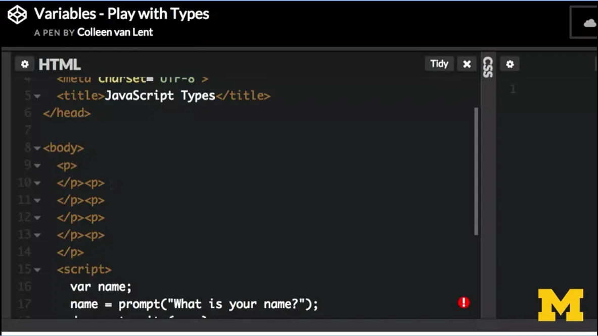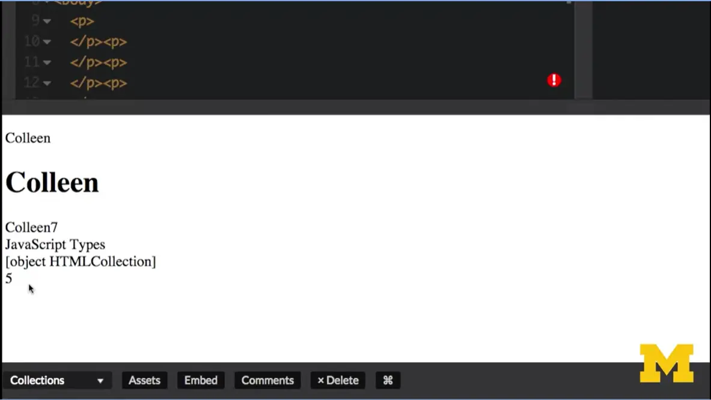
I can try running this again. And when I type in Colleen, you can see that now it knows that I have five paragraph elements in there.

Luckily in JavaScript, there's a ton of flexibility with the different types of data you can use. In other programming languages they're very strict, but here with JavaScript they want you to have the power to try different things.
For now, I want you to focus on learning what types of data are returned from those common APIs. If you do getElementByID, does that return a number, a string, an object, or an array? If you do something along the lines of getTitle or getLinks, what types of things are those returning? If you can play with that and start to feel comfortable knowing what the types are, even if you don't know how they work, you're really going to be on your way to doing some cool programming. So good luck.

Today we're going to be talking about expressions and mainly operators, the different ways that you can manipulate your code. We've been using statements to execute our JavaScript code. Every time you saw a line that ended with a semicolon, we were writing a statement.

Statements often have what we call expressions, or things that can be evaluated. Expressions produce values. They might produce a number, or a string, but many times they produce what we call Boolean values. I want to show you all the different types of operators that we can use in JavaScript to produce these types of expression values.

If you think back, I tend to talked about that left hand side equals right hand side. With the left-hand side is a variable and the right-hand side is that new value we want to be stored.
What are our tools for generating different values on that right hand side? We've seen direct assignments or calls to different functions but there's more to it that we can do than just that.

Here's a very simple assignment expression. I just had x=5 or in another example I said y=12. What's going on here is not an equal or a thing if two things are the same. In this expression I'm saying, go find the value that is story in y. After I grab that, go and store it in x as well.

We also have arithmetic operators. Most of these are very straight forward. You've probably seen plus, minus, this is multiplied, and then we also have divide. And these are the straightforward math that you learned, hopefully in somewhere around third or fourth grade at the latest. 2 + 5 is 7. 5- 2 is 3. 2 * 5 is 10. 5/2 is 2.5.
But this last one, the modulus operator is something you may not have seen before. It goes back to the idea of old long division. If you do 5/2 and you're looking only at the whole numbers, you have 2. What's that leftover number that's kind of left over at the end. 5%2 is 1. See if I can do another one here.
What would happen if I did something along the lines of 13/5? Well, 13/5 would give us something along of 2.blah, blah, blah. If I do 13%5, you figure out how many times does 5 go into 13? That's 2, and what's left over? 13%5 is going to be 3. Go ahead and play with that if you'd like, and type a few numbers in and see what kind of response you get.

Some additional operators we have are the plus plus and minus minus. This is the increment and the decrement. It's the same thing as saying, take whatever I had before and add 1 to it. Or take whatever I had before and subtract 1 from it. A third operator that's very similar is the plus equals. You can also have minus equals. It's the same thing as writing out long something along the lines of x = x + 2. It's the same thing as saying x + = 2. It's just short hand you don't need to use it. But I wanted to show you just in case you see it in somebody else’s code.

We talked about how plus will add two numbers together. That's only true if the operators on both sides are numbers. In some cases, we have the string operators, and in that case, the plus is actually a concatenation. It'll take the ‘Hi’ and the ‘There’ and put it together into one variable. If you want to put those spaces in, you have to remember to actually add them. In the same case, if I have a string and a number, and I use the plus, it's going to be concatenation. You want to be careful when you're playing with this, because anything that's read in from a prompt is a string. You're going to need to make sure that your output is what you're expecting. The plus equals has the same effect as the plus equals from before. It just means take whatever I used to have and concatenate this new part on to it.

Those first few operators, we use usually to assign values to a variable. Sometimes we use what we call Boolean operators to compare values instead. In this case, let's assume that I'm assigned x = 12. Well, some of the different Boolean operators I can use are equal equal, which means don't set x equal to 5, instead, I want you to check, is the value stored in x equal to 5? This is kind of a test case. Well, in this case, no, it doesn't, so it returns false. But if I have x==12, oh okay, yep, those two things are equivalent, so I'm going to return true. There's also another short hand, which is the exclamation point equals. This is a negation or the opposite, it says, hey, make sure the value stored in x doesn't equal 5.

We also have more of the traditional greater than, greater than or equal to, less than, or less than or equal to, where they just compare the left-hand side and the right-hand side and they return true or false.
With JavaScript we have a special case, though. And that's because in JavaScript we don't really care about types too much. What happens if you want to see if a number is equal to something else, but you don't want it to say yes if it's a string?

Here I've got the equality statement that we used before, which is equal equal. If I were to say x == "12" the string, JavaScript would say yep, yep they're the same. Even though to us it's probably not the case that 12 the number and 12 the string are the same thing. If you're looking for what we call equality with type you would use the equal equal equal, the triple equal operator. And that checks and says, hey are these two values the same? And are they the same type? This is just one more thing to put in your arsenal as you start programming. Now I'm putting in this little note here, because I need you to stop and think about these operators and what we've been talking about. It is complete human nature to read this and nod along. Got it? Yep. Got it, got it. And just think you've really grasped everything I've been talking about. It's really hard to understand how these things work unless you type in some examples, play with the numbers, and try to fool yourself and give yourself tricky situations. If you can do that, then you'll feel comfortable moving on with these operators.

Let's do one last little group or two groups before we finish up. In this case, I have what we call the and and (&&). This stands for “and”. It means, hey are the things on the left-hand side, and the right-hand side, are they both true? The pipes, the straight up and down the lines, this is what we call “or”. In this case, you might want to say at least one side must be true in order for me to say true.
And then we have the exclamation part “not”, just kind of like this negation. If I had to come up with an example for using and and or, one might be that in order to enroll in courses at University of Michigan you have to be an enrolled student and your tuition has to be paid up. It doesn't work if it's only one or the other. For the “or”, you might use the example that in America, you can't get into certain movies unless you're 18 or you're with your parents. So that would be a case where you only need one thing to be true.

When it comes to programming, it's not enough for you to just know the syntax of the language or the different rules, or even for you to listen to me and kind of nod along. It's really key that you practice these different things. ‘
And before you start programming yourself, make sure you think about the logic you want to go into your program. Do you want to use greater than or greater than or equal? Do you want to use the and or do you want to use the or? If you think about these things before you start, and then you go in and test them a lot, your code is going to be a lot cleaner and the whole experience will be one that you really enjoy much more. So good luck.
If you want to learn more about the history of debugging, here is an article that talks about the fact that two different people are credited with the term, Grace Hopper and Thomas Edison
http://theinstitute.ieee.org/tech-history/technology-history/did-you-know-edison-coined-the-term-bug
The following is a link to all of the code for Week Two. The individual files are linked within the modules but the weekly collections may include additional code that you are free to use.
http://codepen.io/collection/Adbwgo/
Even if you use CodePen, I encourage you to practice writing the code on your own. For now, I put complete examples in CodePen, but as time goes on, I will remove some of the commands to link the code together. You will need to work on that part on your own..
The next module on functions is crucial to any type of programming that you may do in the future. The reason that programming languages work so well is that they allow people to reuse work that other people have done. Someone else writes the complex code that can determine what time it is in any given country? Excellent. If they put that code in a function then you can use it without really knowing the details of how it works. (And yes, there is a function for that.)
One of the things I want you to watch for in this next module is the distinction between defining a function (writing the code) and calling a function (running the code at the precise time you want it to happen).

Today we're going to talk about functions. Functions are these bits of code that you can reuse over and over again by just coding what we call the function name.

Functions of course, like everything else in programming, have special syntax that you need to follow. In order to declare a function so that you can use it later, you need to use the special keyword, function, f-u-n-c-t-i-o-n. It's not an abbreviated such as, var, so make sure you write out the whole thing. Once you write out function you can give it any name you want. Stick to the same rules as the variables, only use letters, and digits, and underscores. Next, this third thing I have inside here, inside the parenthesis, are what we call the parameters. Sometimes there'll be things in here, sometimes there won't. Once you have what we call the function header, where you have function, the name, the parentheses and any type of information in here. We're going use curly brackets to begin and end our function.
It's really important right here that you realize that you do not put a semi-colon right here at the end. In all of our other JavaScript expressions and statements, we ended them with a semicolon. If you do that here, you're going to mess up your code. All those statements go inside here. And how it works is that later,
then when people run your function, it'll execute all the code that's in {code you want to run}. And this code is just general code you would always write with your semicolons, your expression, your statements. It's just a really nice way to save it. You don't have to keep typing it over and over again.

Let me show you an example. In this case, I declared a function called welcomeMsg. And I didn't put anything inside the parenthesis. Because I said, you know what it is doesn't matter. Every time I run this function, all I want to happen is to have an alert that says, Welcome to JavaScript. And this will work numerous times. I don't have to keep writing things over and over again. It's a small function, but it's something that will work.

Here's another very similar function. The only difference is that, this time, I went ahead and I included a parameter list, which says, hey, now instead of saying Welcome to JavaScript every time we run this function. It's actually going to give an alert of whatever message you tell it to do in what we call it real time.
The first step in using functions is to do this function declaration, where you use the keywords, the curly brackets, and the parenthesis. Declaring a function doesn't actually do anything for you though. You need to tell the computer when you want that function to run.

We do this by saying or we call the function. Every time you write the function name, you're telling the computer that you want to run that code. Calling a function changes what we call the program flow. Before our programs start at the top and just work their way down line by line by line. Now with functions, the computer is actually jumping around in memory and executing different parts of code, not necessarily in the order that you write them.

Here's an example. I have my welcomeMsg function, the one with the parameters. Over here, in my HTML file, or JavaScript file, the file I'm running, is the computer gets down here, it says, oh, I know how to do that, check. Then it gets to our function call, where it says oh, I'm going to leave here and I'm going to go over and run this code. As soon as it's done running this code, it comes back to the next line of code. Well, we know how to say x = "Goodbye", the computer knows how to assign that new value. When we go here, once again, we go back up to this code and then back down here. The code looks quite straightforward to you, and when it runs it should look straightforward to you. But it's important to know that behind the scenes there's a lot going on as the computer jumps from different bits of code back to other bits of code. Hopefully if you type this in and run it, you should get a hello and then a goodbye message. You could type putting in numbers or anything you'd like instead if you prefer.

Let's talk a little bit more about those parameters that I talked about. Because sometimes some functions need a little bit of extra information in order to perform its task.
Let's think about getElementById. That's not really going to work unless you tell it which ID you're looking for. That's an extra piece of information or a parameter that you need to provide. The important thing to know is the names of the parameters for your functions, they're not important, they're like variable names. You can call them anything you want, as long as you're consistent.

The next thing to talk about, when we talk about functions, are return values. Some functions return values, others don't. But these values can be used later for assignment statements or conditional expressions. Later when we talk about forms, we're going to want to put in special functions that will say, hey, I need you to halt execution right now, because I don't want you to hit submit. I don't want you to be able to hit yes on that form.

Let's look an example of a function that returns a value. In this case, I've written a simple function that takes your message that you want to say, hello or good afternoon, good morning, but we're going to follow that up with a prompt. And that prompt's going to ask a person for their name. We're combining a few different elements here. We start off by saying, hey, I'm going to make a variable called firstName, and I want to set it to whatever the person types into the prompt. If over here, if I don't have the term var, firstName would be left as something that's empty. Using return statements are just typically used in order to assign values to valuables or to check conditional statements, and we're going to be using these a lot. I just need you to be aware of the term.

Let's review what we've talked about with functions so far. Whenever possible, use built in functions. Sometimes when people are first learning how to program, they feel this need to write everything from scratch to show that they really understand. There's really no point in doing that at the beginning. If someone else has written a really good function use it. You can practice your own skills by augmenting it or adding little things.
When you do write your own function, try not to be too specific. And what I mean by that is, don't write a function that you're not going to be able to reuse multiple times in a lot of different scenarios. Don't hard-code too many values so that it's so specific that it only works for one person.
Finally, I just want to remind you, that function parameters can have any name you want them to have. A lot of times people get caught up in my examples, and think that's the only way to go. It's not the case. Don't do everything exactly the way you see it online, or in my examples. It gives you a lot more power if you change those parameter names, to see how the inner workings are going.
We're going to be using functions a lot in this class. You're going to be writing your own functions in the homework, and I'm hoping that you'll be able to do this and feel like you're really starting to understand some of the power of JavaScript. Good luck.

Today, we're going to talk not about new concepts, but really, putting our code in the best place to make it easier for you to follow what's going on.

Up to this point, we've been putting our JavaScript into the HTML body tag. Now, it's fine to start off that way, but as we get more and more complex, it's going to make your life easier if we separate our content from our other style in JavaScript functions.
In order to do that, we need to think about where we can put our JavaScript code. And where you can put it, is you can leave it in the body, as we've been doing, you can put your functions into the head section of your HTML code, or you can use an external file.

If you decide to put your JavaScript functions in the head section, that's a really great idea, because they're separated from the content and it makes it a little bit easier for you to follow the code that you're writing. It doesn't make any difference to the actual execution, but it just might make the debugging easier.
If you're going to use this method, you need to remember that you have to use a script tag. Just as a style tag, tells the browser that your about to add some style to your page. The script tag says. Wait, this isn't content, this is going to be some JavaScript code.
If you do this. If you put your code into the head section, don't worry, all of your function will still have access to all the document information, the ID's, the classes, etc.

Let's take a quick look at an example. As you can see, I have my head section and inside there, I have this script ending, script in ending head. You need to make sure that you have the proper tags, if you want your code to validate. Inside this script, I put a very simple function called message. Now, what you need to understand, is when I talk about putting your JavaScript code into the head, I'm only talking about your JavaScript functions. It's still necessary, down here in the body of your code to call the functions. But still, it's a lot cleaner than having the entire function written down here. Plus, for code reuse, you can now call the function multiple times, but only write it once up here.

If instead, you decide to put your JavaScript functions in an external file, then you can use that code multiple times in multiple files. The one thing that's important to remember right from the start is again, when you're using external file, don't use the script tag. It's just the JavaScript, without any script tag.

Let's look at an example here. Here you can see, that inside the head section, I've gone in and I'm done with my script. But instead of writing the actual function, I've gone ahead and give it a source saying up, all my JavaScript is inside my JS folder, and here's the name of the file that I want to use.
If for some reason this doesn't work, you want to make sure that you're very careful about what you put right in here, you want to make sure that this is exactly correct, because if the browser can't find the file, then it's not going to be able to run your JavaScript. So, let's say, you do have a typo in your link to your external JavaScript file. Well, the problem with this, is that, it's actually harder to realize what's going on. If you mess up in your HTML code or your CSS code, it's usually pretty easy to figure out that you did something wrong, because the colors aren't the way you wanted or your text just isn't there. But with JavaScript, sometimes the changes you’re making are so slight, you don't even realize that you have a problem.

It's very important, as your code becomes more and more complex, that you're using the console to debug your code. The console really is your friend. I can't stress enough how much you always want to have it on while you're coding. Myself, sometimes I forget to turn it on and I'm annoyed later, when I could have found my errors so much more easily.

Another way that we can talk about separating your code into this external file from your HTML, is to use these different types of software options, such as CodePen. When you use CodePen, you're able to separate, have a separate window for your HTML, your CSS, and your JavaScript. What's great about this is, it lets you see all of your code at once and see in real time what's happening as you change that code. The downfall of this, for when you're first getting started, is that, I find that sometimes people don't realize that they don't understand how to link their code, out there in the real world.
If you're going to use CodePen, I always recommend that once you're done, take that code and put it into three separate files, so that you're sure you know how to link them together.

Let's take a look. As you can see here, I have one window for my HTML code. One, for my CSS and one for my JavaScript. And code pen, takes care of all the work of making sure that they're all together. If this is your first time ever using CodePen, I did want to point out, that there's this handy little function, that you can re-size the windows.

If you're not too concerned with your CSS right now, you can make that smaller. And really kind of focus, on what you're working on, in the HTML and the JS.

All right, let's review what we talked about today. The first thing, is that you need to feel comfortable with the idea that your JavaScript code can appear in the head. Or the body of your code, or very often in both. Code, can also be placed in an external JavaScript file. If you do this, just make sure that you've linked the files correctly together, otherwise you might have some issues trying to figure out why your code isn't working. Luckily, the console can tell you, if it can't find that file and it leads you down the right path to fixing your code.
Personally, I always develop in the same file. I tend to have my HTML and my JS in the same file, while I'm doing my testing. Once I'm done, I move it out into an external style sheet. It's really up to you to determine which style you like best. Whether you like your JavaScript in the same file or in a separate file. There are benefits to both. And the most important thing for you right now, is to develop the confidence that you can get your JavaScript working, in whatever way, it best suits you. Good luck.
When you write code, it is important to get into the good habits of organizing your code. While there are no specific rules about how and where to place your code, there are definitely conventions. (Conventions are suggestions that most programmers follow. This way other programmers can quickly and easily understand their code.)
The most common organization is to have one main folder with your HTML files in it. There are also three subfolders (folders inside the main folder) for your CSS, image, and JavaScript files.

When we use CodePen we use that idea of separating our code. However, be aware that CodePen doesn't require many of the things you should have in your code. For instance, in the HTML files it ignores all of the information in the <head> section. So, if you develop in CodePen, make sure to test your code later using the proper folder/file structure. You will need to include links to the style sheets, images, and any external JavaScript files.

I know that one of the most frustrating things that can happen when you're designing and developing your webpage is when you just can't get your code to talk to one another. If you've written some HTML, and you're trying to link it to your style sheet, and they just don't seem to recognize each other. Today, we're going to talk about how web designers tend to organize and separate their code into different parts.

First, we always start off with a main folder that's going to hold your HTML code. In addition to your code, you're going to have a folder for your CSS, your images, and if you're doing it yet, your JavaScript code as well. Organizing your code into these separate folders, CSS, JavaScript, images, it's not a rule. Your page will still work even if you have everything inside one big folder. But as you go on in web design, your fellow designers are going to expect that you have similar conventions to their own. you want to get used to doing things the right way, right from the beginning.

Here I've got a quick picture of how I could organize the code using these different folders. I have ProjectOne, ProjectTwo, and ProjectThree. Here in ProjectThree is where I really want to look at what we're doing. As you can see, I've got an html file, an html file, all four of my html files. In addition, though, I have my css, my images, and any JavaScript. We want to make sure that all these different files can talk to one another. And so, we're going to use the convention here, and I'm going to show you how to make sure they can link together in the right way.

2nd line should be: <script src=”js/javaFunctions.js”></script>
Let's say that inside your HTML file, you want to link to your style sheet, your Java functions, and perhaps a picture. Well, this is the way you're going to do it. When you link to your style sheet, you want to make sure you include your CSS folder. You don't need any other folder, just that one. But be careful, if you called it css lower case, make sure your link says css lower case, not upper case. When it's time to link to your java files, you do the same thing. Make sure you start the link with that js. What this does is it tells the browser, hey, I need this file right here, but in order to find it, go into the JavaScript folder first, right?
Finally, the same thing, when it's time to link to an image, make sure you link to your image folder first. Now the images folder is the one that tends to have the most variance in the name. Some people call it image, some call it images. Another kind of common name is to call it img. When you're linking your code with other people's code, make sure you do a quick check. And make sure that your folder names CSS, JavaScript, and images match what other people are expecting.

When it comes to linking from your style sheet, it can be a little bit trickier. In the example I have here, we want to link to this holiday picture right here, all right? Now we know that the file isn't in the CSS folder. It doesn't belong there. Pictures should be in the images folder. But the problem is, how do you tell the browser that the images folder is someplace different? In this example we go up 2 directories, find ‘images’ folder and pull from there. Done & done.

If things aren't working for you in your folder structure, here's a few tips you can do just to see if we can find out where the issue is. First, if the link isn't working for you, check to make sure that you spelled the file name correctly. Case matters, upper case, lower case, it can make a big difference. You also want to make sure that the files are in those correct CSS, JS, or images (img) folders.
Finally, and this is a big one. As people tend to mess up on their code, they open up new versions of the files. It never ever ceases to amaze me how many times that I've done this myself, where I'm working on a file, I'm making changes, and they're just not showing up in the browser. Almost all the time it's because I'm working on a bad copy. I'm hoping that this is going to help you understand a little bit more how you can organize your code to make the best use of the different CSS, JavaScript, and images functions out there. Thanks.

Hi everybody. One of the things we promise you in this course was that we'd teach you how to do interactivity with JavaScript. Well, we finally reached that point where we can start having some fun and reacting to events that happened to your web page.

Up to now it has been up to us to decide when the functions should execute. In our code, we put the script tags and we call those functions. Well now, what we want to do, is we want to take advantage of the fact that we can call these functions based on special events. Where do these events come from, well, they come from the JavaScript API. We can start doing things based on clicking, mouse movement, all these different types of dynamic function calls. Let's take a look at how we can do this.

First, let's talk about just some of the events that we normally react to on a web page. The first one is onclick, it’s very straightforward, if the user clicks on an HTML element, we want something JavaScript function to execute. We can also have onmouseover, onresize, and a very common one is onload.
This last one says whenever the page is loaded, I want to call some JavaScript functions or run some sort of JavaScript code, but please don't do it until the page is completely done. The reason that this one is a little bit more interesting to me, is that sometimes students have problems in that they try to write JavaScript. But the page that they are trying to apply the JavaScript to, is so complex and takes so long to load that the JavaScript is done before the user can even see the page. This last one onload we are going to use quite a bit to make sure we are all seeing the exact same events.

All right, so how does this work? We know that any element can react to an event. Well, we need to add code to our HTML that links the events and the tags together. Here's an example for you. Here, I have my tag div, simple HTML five tag but I've added this event right here that says on click.
Now the browser's changed, the browser is what I say listening. It's listening, listening to this one div and saying okay, if anybody clicks on this then I am going to call the JavaScript function message. All right, this isn't going to happen just once, this is going to happen for the duration that this site is loaded onto the browser.

One of the things that we need to talk about is the use of quotes. When we have our event such as onclick equals message function or onclick equals add function, anything like that we need to put the function inside quotes. And you can use single quotes or double quotes in order to do this. However, I always use double quotes because it makes it much easier if I want to pass string arguments to the function. If you take a look down here, you can see I want to call the function called message and I need to send it this Hi message.
Well, if I'd done it this way (<div onclick=’message(‘Hi’)’>) equals message with a single quote. And then, what's going to happen when I try to send my screen? As soon as I add another single quote the browser goes, that's the end, it matches there's your whole string.
If you're going to be matching different strings together, put the outer one in double quotes and he inner one in single quotes and it's going to make it much easier for your browser to understand what's going on.
Be careful copying and pasting quotes when you're coding. It's a very common thing to do but it's important to remember that a lot of times your editor gets mixed up. Because when you're coding, you don't have that same kind of slant that Word, PowerPoint, and other programs put into your quotes. Whenever you copy and paste, go back and make sure that they're matching up correctly.

Let's take a look at what I do with this code right here. I have my HTML on one side and my JavaScript function on the other. The JavaScript function's pretty simple, all is it going to do is take a string, and it's going to update the output element to show whatever that string is along with the word event.
Over here in the HTML is where it's going to get a little bit more interesting and it's going to be the first time we're using events, I have three. I have onload, which means hey whenever I load this page, I want you to call the message function and send it the message load. I have onresize which means if I change the size of the browser, I want to send a different message and then finally the last one is onclick. All three of these events, onload, onresize, onclick, they're all going to call the message function, but they're going to call it with three different frame runners.

Let's take a look at what's going on. As you can see, when I loaded the page, it automatically had LOAD event show up.

What happens if I click on this paragraph right here? Oh, it changes to click event. It's actually happening over and over again; you just can't tell because it's so quick.

Now, the last thing I'm going to do is I'm going to resize the page and you can see, that it recognizes that there is a resize event. So, it's pretty simple to go through, and I'll go back here, and had your HTML actually change based on the different events.

The second example is, again, a very straightforward way of showing you how the events can be linked to different element types. One HTML element we haven't used a lot in my courses is button. I avoid using it because I think that the semantics of a button tag really conveys this idea of click me and I'm going to do something, and since we didn't have the power to do that yet, I really didn't want to use that element, but now we can.

What I have here is a simple JavaScript function that says, hey I want you to call the JavaScript date function, this is something that I didn't write. You know that it was written by JavaScript partly because well, it's yellow.

All right, so I'm going to use this function and connect it with the button. So, I have button type equals button and I have onclick equals displayDate().

As soon as I click on that, we want to keep our eye on where it says this is a paragraph, because when I click on it that should be updated to what the current date in time is for when I'm running this. All right. Now, there's a good chance that this date doesn't look exactly the way you expect it. Don't forget, computers are very specific, and they're going to give much longer answers than we're usually used to.
As we start adding JavaScript events and reacting to events to our code, I just want you to be aware of something that's going on, that's really quite complex.

Before JavaScript, for the most part, our programs ran in a linear order, it would start at the top and execute each statement step by step, one by one and everything was really only executed once. But now that we have events, we're really causing the program to what I want to say, run continuously. Because soon as I add that event, the DOM is now always going to be listening for those events. The API is saying, all right I need to wait on click, onclick, onclick. If you add too many events to your page, you could conceivably slow down the execution of your page.

Clearly there are a lot more events than just the four I told you about. We tend to categorize these events into groups. We have mouse events where you can react to onclick, double click, mouse enter or mouse leave, mouse move, you can react to keyboard events. You can actually listen for certain keys to be pressed down or the least. There's also what we call frame events, and we've looked at two of those already. You can do onload, onresize, you can react to scrolling on your page or even if there's an error.
If you want a more comprehensive list of events, you can really go anywhere online, but I went ahead and I'll link one for you in the course page, that goes directly through Mozilla. It is https://developer.mozilla.org/en-US/docs/Web/Events.
The important thing to know is that you're not expected to know all of the events, it's something we're going to learn over time. Hopefully, you've got this little idea of what events do and how you can start using them to add a little bit of interaction with your page. Without these events JavaScript can be limited in its ability to interact with the DOM. We didn't have onclick, onload and be really hard to actually work with our webpages.

Another thing I'd like you to take away from this is while events are really cool, they are also very annoying. It's possible to put a listener on every paragraph of your page or every dip and have cool things happening all the time. But after a while, the usability of your page is really going to take a hit.
I know I've said it before, but don't worry about memorizing all the different events. As you code, certain needs will arise and you'll say, I wonder if there's an event for that, I'm going to go look it up. What I'm much more concerned about at this point and hopefully you are to is gaining the basic idea of, I know how events work, I'm going to try to implement one. And when a problem arises, as it probably will, I can kind of fight my way through and make it work, just don't forget. We're there on the message boards. We're happy to all work as a team to make sure that your page is doing the types of cool things that you want it to do. Good luck.
This is a great time for you to write some code!!! Open your editor (or CodePen) and write a small program that pops up an alert message when you load the page. Or better yet, change the content of your page to the current Date every time you open the page. Once you are done, compare your answer to an example I have here: http://codepen.io/ColleenEMc/pen/vLEJjq
The rest of the material is more and more examples of using Events and functions in JavaScript. If you are a little worried that you don't understand them after the first module, that is fine. Just read all the way through, try to play with some of the code, and then read them again. It isn't uncommon for it to take a few weeks to make sense. Since we only have four weeks in this course you may find that you are sometimes able to make the code work, without fully understanding the details. That happens a lot. Programming is something that comes with time and practice. And then suddenly the moments of "Hooray" start to outnumber the times that you are stuck.

Hi everybody, welcome back. It's time for us to take some of the things we've been learning and put them into practice. One of the most important things about learning a programming language is making sure that you're getting your hands-on experience. Reading these modules just isn't enough. It's great if you just want to learn about JavaScript or learn about these different elements at a very high level. But if you actually want to feel competent and confident in your coding, you need to make sure that you're practicing. Let's dive into the code. I want you to modify the code. And whenever possible, it's great if you can break the code. Because it's always better to make your errors now. We have the whole community around you. You can ask questions.

We're going to look at two different examples today. One, in which we're going to modify the DOM. And the second, we're actually going to change the style of the page that we're looking out right now. Let's get started. In this example, I'm going to do something a little bit different then we've done before. When I first introduced the idea of events, I said that events are matched with functions. Well, you can also match events just with JavaScript code, not a function itself.

Here I've created two buttons, and I named them First and Second. You are going to use those buttons to change the content of this third paragraph right down here. When I click on this First button I have onClick, grab that element, change the innerHTML, and I want you to change it to Clicked First Button. The other one is very similar. The only difference is that I want to change the content of that paragraph.

When I click on these buttons this, right here, is the element I want you to look at.

Let's click on the First button. You can see that I clicked, it said, hey I know that I just clicked the First button.

When I click on the second one, you know that I've clicked on the Second button. This seems like a really small program to write, but there's a lot going on in here, and a lot of places where people tend to make mistakes. Let's just look at them quickly.

The first thing I want you to look at is this idea of using document.getElementById. Whether or not you have these as upper- or lower-case letters, makes a big difference. If you accidentally change it from ById to ID as uppercase, this is going to cause problems in your code.
The other thing I see a lot of people do, is they think that innerHTML is a method, just like all the other ones are. It's not. When you're using innerHTML, you need to make sure you use those equal, that assignment statement, okay? The other thing that I feel sometimes people really get kind of hung up on is the code that I give them. You can put anything you want in here. Let's change some things. First thing I want you to look at is this line right here. If I were to change this, I want you to intuitively know before I do it what part of this page is going to change. Is it the event that's going to change? Is it the button that's going to change? Is it the whole page? So luckily, with CodePin you'll be able to see it immediately. All right, wow, now I really.

That's how I can change the button itself. If I want to change what's going to happen, that where I put in here, Clicked Another Button.

Let's save. I'm going to click on First, Second.

Play with this. Try putting it in yourself. And realize, again, that you can put your JavaScript anywhere you want, it doesn't always have to be in an external file.

Let's look at the next example. Okay, get ready. This example is going to be a big one, because we do have a lot of things going on. We have our HTML. We have our CSS. And we have our JavaScript.

Let's start with the CSS, because it's the simplest and it's not going to change as this program runs.
I've declared two classes. One called .closed, and one called .open, and what they do is, well, it's pretty straightforward. The .closed one says, I want to change the display to none. What's going to happen is, right down here, this one right here, it's going to disappear. However, if I were to set the class to .open, well, then now it's going to reappear again. That's all we really need to realize, is that .closed will make it go away, .open is going to make it come back.

Over here, in my HTML, I have a paragraph called demo. And that's right down here, it's all this entire thing we can see right here. This is the one we want to change in our code.

And finally in the HTML, we have two events. We have onClick, openMe, and onClick, closeMe. Let's see how we can write the JavaScript that will make that div appear and disappear. Let's start with closeMe. I've actually put two different options here. The code looks a little bit longer than you might expect. What I need to do, is I simply need to grab the demo element by doing document.getElementById. But now instead of trying to change the inner HTML, I'm going to change the style.

I go in and I say x, which is my element, .style.display="none". I'm not using my CSS, I'm actually hardcoding it in here that I want it to go from none.

And in open, similarly, it says, hey grab that element, and I want it to go from whatever it used to be, and now it should be block.


Let's look and see if this works. Close, Open. Close, Open. Great, it works, but we've hardcoded those elements in. We've hardcoded block. What if we also wanted to change the color, or the width, or many other elements? This is where the idea of our classes can come in.


Let's change it over here really quickly. I'm going to comment out this line of code. And same right here. All I've done here, is we're going to have the same element, but the difference is now, we can actually go in and we could say, you know what? For that element I want you to change the class name. I don't know what it used to be, but now I want it to be closed. And down here, I want it to be open.


So, I can talk a lot. But it's important that even I stop and check that code and make sure I didn't break it. Close, Open, Close, Open.

Now I don't really have time to do this right now, but I think what would be a great exercise for you, is to look at this code using Inspect Element. When you do that, and you click on those Open and Close buttons, you can really see that we're going in there and we're changing the DOM. All those things, all those different styles, you can see them in effect. Make sure you're playing with this as you're coding along with me. I could review with you what we just did, but I'm not going to.
The most important thing for you to do right now, is stop reading this module and bring up some sort of editor code bin, and go in there and start coding. If you don't do it now, you might start falling behind as we get into these more complex ideas. So, good luck.

Hi everybody, welcome to my personal least favorite lecture of all time. It's the lecture where I try to explain the word this, and how it's used in programming languages. The only reason I don't enjoy this lecture, is that I find it extremely difficult to talk about the word this without using the word this. Try your best to follow along. And I'll do my best to make sure I'm as clear as possible.
Why do we even need to use special key words? Well, because a key to smart programming is using different functions. You don't want to write your own code. You want to use somebody else's code. But a common road block, especially for new programmers, is trying to figure out.

How can I write a function so that I can reuse it over and over again? How can I write this function so that different elements can use it? But the function knows basically, how do I know what information to use. That's where “this” keyword comes in.

This allows an element to refer to itself. Every object in the DOM, has an automatically generated this. This “this” attribute allows you to access an element's info. Without “this”, it would be very difficult for functions to know what data to use. This is also used in outside functions.
Let me draw up something really quickly, before we get to more explicit examples. When you're writing code, if you were to say have an A tag. And somewhere along the lines you say onclick. And you want to write a function. How do you tell the function that you want to use this particular a tag? As opposed to other a elements that might be in the program? Well, you can go ahead, and you can somewhere put the word this in here. Whenever the computer sees the word this, boom. What it's going to do is it's just going to backtrack and go back, back, back, back, back, back, back, back until it's, oops, here's an open tag. They must be referring to this DOM element right here.

Let's look at what I hope are a few simple examples of using the word this. Right here I have four different elements on my page. I have two awesome pictures from the 80s and the 70s. And then, I also have a few divs with some text within it, right here.
Each one of these elements has been associated with an event. And I want to show you how I can use the word this. So that the events can be very specific to the element I'm click on. Let's start by looking at this picture right here. In the html code you can see that I have source check. I have alt text check, and I also have an event that says on click. I want you to log to the console the alt text of this particular element. As soon as the computer sees the word this. It's going to back up, until it gets to the image. And then we'll say. They want the alt text for this image. Let’s see what happens when I actually click on this image.

As you can see, as soon as I clicked on it. The message Awesome 80's haircut shows up, all right? If I were to click on this multiple times. It doesn't actually show up in the console multiple times.

You can see that there's a little number over here that says. Oh, this has happened four times in a row. But the important thing is that, I click on an image and the event knew that this was the image I was clicking on.

Let's look at the next example down here. I've got my div that just says, hi there. Checking out a div. I'm looking at the second example right here. On this one, I want I want to do something similar, but divs don't have alt text. Instead, what I said to do is, log the inner html. When I click on this div, I'm expecting to see, hi there, checking out the div to show up in the console.

As you can see, it's working. These first two examples are very similar. And that all I'm doing is basically kind of manipulating what's going on in the console.

In these last two, I did something very similar. But instead of just using on-click do something. I'm going to use this function on the right. Here's a great example of code reuse. The first few examples, concept only. This one I want to show you how I can use this same function called displayID on different elements. On my family Christmas photo down here, you can see that I have an id of ID-1. On this picture over here, I have an id of ID-2. My hope is that they can both use the same exact function called displayID. And even though they're using the same function, it's actually going to show different results.

Let's see what happens when I start to click. ID-1, ID-1, ID-2, ID-2. Here's a simple example of us using onClick along with a function and the keyword, this, to provide different data. I want to show you though, a slightly more colorful example. That I think also makes this point really well.

In this example let's start right off with the JavaScript. I have a function called showProperties. And it is expecting to be sent some sort of element. Remember, I can call this parameter anything I want. I can call it element, I can call it e, I can call it elem. It doesn't matter to the computer. As long as it makes sense to you, the general idea that. Oh, I think I'm going to be passed a DOM element here.
Once you get inside the function you can do document.getelementbyid. Basically, what it's doing is it's grabbing this section of my html. Stating I want to change what's showing up inside that little box. What do I want to change it to? I want to change it to the alt text of whatever element is being sent to me. I'm going to stop here and pause just for a second. Because this is a great place for you to think. All right, she's talking about alt text. So that probably means the element is going to be a picture. Because if it ends up being a div or a paragraph, this won't break but nothing's going to happen. Now, I'm going to show you the cool part of this. On each one of these elements, I have shown property and the keyword this which says send this image that I am hovering over with my mouse and call that property.

Let's take a look and see how this works. I'm going to hover over the first picture of my dog. And I am really hoping that the alt text associated with this picture is going to show up in the preview, and it did. I hover over another picture, and I get with my boy. And then finally, in the last picture you can kind of see how once again the alt text is being displayed inside the preview. I've done something really simple here. And what you're going to do in one of the homework is expand on this idea and say. Not only do I want to change whatever text is showing up in here. I actually want to change this whole picture. So go back.
Follow this more complex example of using the keyword this that you can figure out how to change more than just one thing. How can we change different things? How can we change the background color? Could you change the border? Different things like this that are, you all know how to do. But just because you know how to do it, doesn't mean you don't have to stop and think and really process it in your mind first.

The key word this, the concept of the word this, can be really tricky to grasp. It took me quite a while myself. And I don't think I really understood it until I started teaching it. The important thing to note is that repeated practice helps. You want to go in and you want to do as much coding as you can. And then, if or when you get stuck, remember to work backwards. Find that keyword and just start marching back until you find a tag. As soon as you find that tag, think back. Think to the early things you learned when you were first learning HTML5. Think about that DOM and go. Oh, we're talking about this little part of the tree right there. I hope this is something you're able to grasp much more quickly than I did. And I'm going to do my best to give you the examples that you can use to really master this. Good luck.
I am going to provide an optional quiz for people who want to double check how well they have retained some of the general concepts from Week Two.
What I really want people to focus on though is the Photo Gallery assignment. All of the components you need to complete this program are in these modules, it is your job to put them together. Please note, the answer can be as little as 4 or 5 lines of code, or much more if that makes more sense to you. While you are welcome to seek out help on the forums, please remember that you are not allowed to post code. The code to get you started is here: http://codepen.io/ColleenEMc/pen/wKYxZa

In this module, I want to walk you through how we're going to be putting some of the things we've learned into practice. And the main things I'm looking for, from you, are your abilities to do two things.

First is, if I give you some HTML code and some CSS code, can you change the background image of an element? The second thing I want you to try to do is can you change the content of an element? I have a very specific planner to put into place.
https://codepen.io/ColleenEMc/pen/wKYxZa
So, let's take a look at the gallery homework.

In order to begin this assignment, I'm going to give you the HTML code and the CSS code that will create this page here. I've got one div and three images underneath it. Each one of those images has a link to this source file and it has alt text.

So right here, its alt text is Styling with a Bandana. And did you notice that as soon as I put my mouse over this image, it changes the source image and the text for the main div.
We're creating a photo gallery here.

As I leave the picture and I go off to this side, we go back to the original image in color.

When I go over the next picture, you can see boom it went in and found out what the source file was for this image. It located the alt text and use both of those things to update that upper dish. Again, I'm going to leave.

And I'm going to go over this last one. I've actually put in the JavaScript function codes for you and the events. The one thing that I need you to do is write those functions.

Let's look at the functions I want you to write. The first one is called, upDate, and we're going to send it to previewPic. And I put in here, one of the things I want you to do is change the URL for the background image to be the source file of the image we were going over, that previewPic. The next thing I want you to do is I change the text of the div so that's going to show the alt text of the preview image. This is what we call upDate.

When we leave the picture, I want you to undo what we just did, I want you to go in and I want you to change the text and the background image again.

Just as a little refresher in case you haven't used background images before, the background image is an option for including graphics without using an image tag. It's really just another way to add a little bit of style without affecting the content. When you set background images it's always a good idea to also set a background color. Because sometimes, the URL might not be valid or the browser might not be able to download it.
Here's an example of me setting the background image and the background color. In order to this we want to say the URL use this keyword URL. And then inside the parentheses you need to put the name of the file. Okay? Now in this case it just happens to be mypPic.jpg. What you don't want to do in the homework is you don't want to hard code this right here. Instead of giving a name, you are going to want to use some sort of variable. Okay? After you do that, you're going to want to hard code the background color because we're hoping it won't be there at all.

For the element text, I'm going to leave that a little bit more for you to figure out how you're going to do that. We've discussed two different ways to change the content of the document. One is to use document.write(). The other one we've used quite a bit is innerHTML. You need to think about what's the best way to update the content that's inside that div to have it display the message you want.
Again, I really want you avoid doing anything where you are using the actual alt tag. I don't want you saying, oh, look this picture happens to say the alt text is happy. And you going in and hard coding something and saying, oh well then this should equal happy. This isn't how programmers work. The way that programmers try to do things is instead you should have something is going to equal some sort of element, all right? Avoid using quotes on the right-hand side for this assignment. Really try to use something that can change as the document changes.

Okay, so a couple tips to get you started. The code you need to write should actually be really short. If you are writing more than five or six lines of code, you probably want to stop and rethink the logic behind what you're working on. I wrote it in two lines of code and that was each function in about two lines of code but I can see you putting it more in to five or six to break it down in to small pieces. You will need to think about how you're going to incorporate the quotes. Because don't forget, when you mix double quotes with single quotes, things can kind of get mixed up. You should also remember that if you want to put two Strings together, you need to use that plus operator in order to concatenate the Strings.
This homework assignment is meant to give you an opportunity to do something that you're proud of. If you find yourself getting frustrated or lost, you should stop and ask for some help on the discussion board to make sure you're on the right track. But really, I'm hoping that this something that you can do, that you can later use if you want to incorporate it into your own portfolio. So good luck.
The following is a link to all of the code for Week Three. The individual files are linked within the modules but the weekly collections may include additional code that you are free to use.
http://codepen.io/collection/noEJaj/
Even if you use CodePen, I encourage you to practice writing the code on your own. For now, I put complete examples in CodePen, but as time goes on, I will remove some of the commands to link the code together. You will need to work and learn that part on your own..
Finally!! Now is when I start to explain some of the concepts I said you had to wait for. Hopefully by now you are comfortable with the code
document.getElementById('idName');
This code will cause the API to search the DOM until it finds a node with the id of 'idName'). The key is that it is returning a single Node. But what about these other functions?
document.getElementsByTagName('p');
document.getElementsByClassName('thumbnail');
These commands may return zero, one or more Nodes. So now we need to find a way to handle dealing with collections of data, rather than just one thing at a time. This is where Arrays come in. Let's get started.
Here are some resources for you to explore if you are interested in learning more about the topics from this week. The first reading is from W3Schools and covers the basics. The second reference is from the Mozilla Developer documentation and goes into more depth than I would expect you to have from this course. It is optional.
You can find the code at JavaScript Course Code. It is organized by week, so you can check to see if any code is provided for this week's lessons.
I thought about putting this next link in the optional resources section, but it is something I really want people to know about. This "Cheat Sheet" covers the major essentials of the JavaScript language. Some of it we have covered, and some we will cover in the next two weeks. And then there is a chunk we will never get to.
http://www.cheat-sheets.org/saved-copy/jsquick.pdf
So why do I want to share this with you? As you learn to program it is important to step back every once and awhile and review what you have learned AND what you still have left to learn. It helps a lot of people to look ahead and start to see that they need to master the small stuff before they can tackle the larger concepts.
Some elements on a page can take on the focus state by default. When you go to a page and use the tab key you can navigate from link to link and through forms – all without having to touch your mouse.
It is possible to add the focus state to other elements too by adding the tabindex attribute to a tag. While (below)
<div> My first div.</div>
is not accessible from the keyboard, this (below)
<div tabindex="0"> My second div.</div>
is accessible from the keyboard.
The number associated with the tabindex attribute is the tab order. By default, everything has an order of 0 which means that they will be visited in the order of the HTML code. It is possible to give the attribute a higher number, but this can be confusing if it forces the site visitor to jump randomly around the page.
You can see an example of tabindex in use at HTML tabindex Attribute.
To an eager coder this may sound great – "Let's add focus to everything!" But this would slow down a person's ability to navigate quickly through your page. Instead, use it only in places where keyboard access would be important. For instance, in last week's homework you created a photo gallery that used the mouse. By next week I will want you to update that code to also react to the keyboard.
In the videos ahead I will be showing you how to use JavaScript to access and change some of the attributes on a webpage. But we all know that watching someone do something and then doing it on your own can be a bigger leap than you expected, so I want to give you a short reference on two different methods I use.
If you want to access a part of the DOM you can often access it directly. For instance, if you used document.querySelector() to access an image element, you can then access its src, alt text, etc.
my_img = document.querySelector("img")
console.log(my_img.src)
console.log(my_img.alt)
Sometimes though you can't access the data directly and that is when you will want to use the HTML DOM Element getAttribute() method.
my_img = document.querySelector("img")
console.log(my_img.getAttribute("src"))
console.log(my_img.getAttribute("alt"))
Similarly, you can often change the value of a DOM element by accessing the attribute directly:
my_img = document.querySelector("img")
my_img.src = "mydog.jpg"
my_img.alt = "Brown labradoodle"
Sometimes though you can't change the data directly and that is when you will want to use the HTML DOM Element setAttribute() method.
my_img = document.querySelector("img")
my_img.setAttribute("src","mydog.jpg")
my_img.setAttribute("alt","Brown labradoodle")
It is nice to know how to change things with JavaScript because it will allow you to leave the HTML alone, but still add attributes such as my_img.setAttribute("tabindex","0")
**This is a big hint for the future homework**
Finally!! Now is when I start to explain some of the concepts I said you had to wait for. Hopefully by now you are comfortable with the code
document.getElementById('idName');
This code will cause the API to search the DOM until it finds a node with the id of 'idName'). The key is that it is returning a single Node. But what about these other functions?
document.getElementsByTagName('p');
document.getElementsByClassName('thumbnail');
These commands may return zero, one or more Nodes. So now we need to find a way to handle dealing with collections of data, rather than just one thing at a time. This is where Arrays come in. Let's get started.

Today we're going to be starting something that's really quite different than what we've been doing in the past. In the first few weeks, I used variables that stored a single piece of information. We talked about numbers, strings, true or false booleans, or objects. And while objects can be quite complex where you can have entire DOM elements, the fact is they were just dealing with one element at a time.

But what do you do if you want to use multiple related pieces of information? That's where the idea of arrays comes in. Arrays give us a chance to declare multiple values that are all linked to a single variable.

In this case I've declared an array called grades, but instead of giving it one value, I've given it ten. In this next example, I said I wanted an array called foods, and I gave it three values. In the first one they were numbers, in the second one they're strings. My third example, I'm finally going to get to where we can start using those APIs getElementsByClassName. In this case, I have no idea how many elements will be in this images array because I don't know how many images were in the document.

And in the same way, I could declare array by saying, you know what, I want to make a variable, I'm going to call it listItems. And how I'm going to assign it or declare and initialize it, is by doing document.getElementsByTagName and giving it ['li']. Now it'll travel through the DOM and grab every element that has that li tag.

Hopefully you've seen this idea that an array is not a single value, but a collection of values. You start off by giving your array a name, and then you can assign as many values as you'd like. Each one of these values 80, 82, 81, etc., these are called elements. My array is called grades and it has ten elements in it. Now if I want to actually use these elements, I need to know that each element has a numeric index, or a number that goes with it. And in arrays, with almost all computer science ideas, we don't start at 1, we start at 0. If I have an array of 10 elements, The index goes from 0 to 9. If I have an array of 5 elements, I know that it'll go from 0 to 4.

Okay, so we have our array, and we know, in this case, that we have an array with 10 values in it. Each of those values is called an element. In computer science, when you're talking to other people, this is a term that you want to use, because then you'll really be conveying that you're using an array. How do we get to those elements, though? Well, each element is referenced by an index. If I were to say grades[0], right here, well, the computer knows, oh, I have this array up here. I need to go find the one that's in the 0 place, so grades[0] refers to 80.

If I want to talk about grades[4], well this refers to value 62. grades[0] is the first value, grades[4] is actually the fifth value. If this is the first time you've really experienced starting your counting at 0, it can be a little bit confusing at first, but you'll get the hang of it in really no time.

One thing I wanted to mention because it's different than in other program and languages, is that elements in array don't have to be all the same type. I could have an array, in this case called info, that has a string and a number, and then a string and a number, and that works just fine. However, it's very uncommon and I wouldn't necessarily encourage you to do your arrays in this manner.

Instead, we want to focus on this idea that arrays tend to have the same values in them and that they have attributes and methods. Because JavaScript arrays are objects and that gives them some special power. For instance, we can refer to grades.length. We can call the method grades.sort(), or we could even add additional elements to our array using the method called push, where we would add another element to it.
Now, if you start thinking about some of the different ways we can use arrays, you can start to put things together. For instance, when I talked earlier about grades[9] or grades[8], we knew exactly how big that array was because we had initialized it. But sometimes you won't know how long the array is, especially if you used getElementsByTagName or something like that.

It is possible to combine the idea of length and the idea of push to come up with our own way of adding things to our array. Grades, here's the element I need. I need [grades.length], because I know that's the last place where we don't have anything, and set it = element here. These two things right here, grades.push(element) and grades[grades.length] = element, they're the same thing, it's just a different way to program. This kind of flexibility can be really great once you get the hang of JavaScript. But when you first get started, it can sometimes be confusing when you see people doing the same thing in different ways. It's a really great learning opportunity for you to try to figure out which things match as you go out and see new code.

Let's review. As you learn to declare and manipulate arrays, your code is going to become much more powerful. You just need to take the time to switch your mindset from single values to collections of values. And once you do that, we can start playing with these new API methods that we haven't used before. The getElementsByTagName and getElementsByClassName.
Quick note because I know this is a typo of a lot us make, is that you're writing this the correct way. We've been using getElementById, make sure you're typing this else you might run into problems. Go ahead, start typing in some code, use the console to make sure things are going the way you want them to, and keep coming along with me as you learn new ways to use arrays to improve your page, thanks.

Today, we're going to do what I call a Code with Me. Well, it's perfectly okay if you just sit here and read the modules. I really encourage people to take this as an opportunity to find out, can you do the things that you've been reading about all along?

Specifically, I'm wondering, can you declare an array? We've been talking about them, we've been using them, but I've been doing all the work. What if I asked you to declare array? Would you be stuck or can you jump right in?
After you declare an array, can you access the different elements of an Array? If you remember, each array is made up of as many different elements as you can think of. If you want to actually access this one right here, how do you do it? Next thing I want you to think about is can you add elements to array? If we want to add something after B, perhaps a C, do you know the proper JavaScript to use in order to make your code work? Let's jump right in. As I said, I have this code online for you. But I really encourage you to start from scratch and try coding on your own. And using my code as a reference just in case things go wrong.

Let's take a look at this code. I really want you to understand each and every line. Sometimes I do things the long way, but that's okay. Because I really think it's a great learning experience for you to understand what's going on with JavaScript.

Let's start off with the fact that I declared an array with four different elements in here. I have Banana, Orange, Apple and Mango, I'm going to use those inside my HTML code. In fact, where I use them, is I use it in the very first function called loadFruits.
When my page starts up, it's going to call that function and right away it says, you know what? I want you to grab everything that's in this array, all of it, and dump it right into this paragraph right here. This is why, again, if you look carefully at the HTML file, there's no fruits there. It's all being added by the JavaScript. Once you've got that kind of initial setup for your page, this is where we want to add elements to our array.
In order to add something, we basically don't want to add it here. We want to add additional things to the end of our array. All right, let's get started. In this function, it's going to ask us what our favorite food is. Once they ask, we need to know where should we put it?

Right now, I'm going to draw up on the screen to get an idea of what the index of each one of these elements is. It starts at 0, 1, 2 and 3. So this means we want to put the next fruit in position 4.


Let's take a look. I click Add Your Favorite. I'll say Strawberry. And when I hit OK, right away the JavaScript has gone in and said, oh, I need to add this fruit to my whole array. The kind of cool thing is that, it doesn't say 4 here. I didn't say, I want it to go in position 4, because then it wouldn't work if I wanted to add more and more fruit. This is where these little elements are coming together. You know that to add something to your array, you use the array name. We have fruits, then you have to give it an index. And the easiest way to add something to an array is to just use the length of itself. Originally, I had four elements in my array. Perfect, I put it in position 4. Now the length of my array is one, two, three, four, five. Because I'm using a variable here, instead of hard coding a number. My program will work no matter how many different elements I add. Length is the count of fruits in the array.

Let's add two more. And I can add Peach. And I can add another one. I'll just add Banana again because I have no imagination this morning. There we go. This is a very simple example, but one that I want you to master. I want you to go in there, I want you to make your own array. Don't use fruit, use your favorite foods, use your favorite cars. Use your friends and take them on and off. And see if you can do these different things to manipulate an array. Once you feel comfortable doing this, you should feel confident going on in this class reading additional modules. And knowing that you do understand what's going on, even if you make a mistake now and then. So good luck.
In the next few lectures, we will talk about more advanced coding techniques. Any programming language has the general ability to loop (run the same code multiple times) and to make decisions during "run time." The important thing to know is that while the concepts are the same among programming languages, they all do it a little differently. Some use parentheses, some don't. Some rely on indentation, others don't.
The important thing is to understand the LOGIC. Doing just the examples we provide here aren't enough, you will want to change your code to come up with new decisions and different criteria to test different situations.

Hi everybody. Now that we know that arrays are an option for storing data, we need to think of the upsides and downsides of using them.

The upside, of course, is that arrays can store a lot of things in a single variable, instead of declaring variable grade[1], var grade[2], var grade[3]. The downside is, is when a single variable stores a lot of data, sometimes it can be a little bit harder at first to access that data. What you want to do is go through every single number, but we don't want to write the same code 10 times, or 20 times, or 40 times? What we want to do is we want to use iteration, or what we typically call looping.

When you loop through an array, you look at each element, usually starting at the first one and ending at the last one.

In our example here, we have an array of ten elements. How could we find the average of those ten elements? Well, we would start off by saying we need to go through and add 80 plus 87 plus 94 plus 82. We need to add them all up, and probably store them in a variable. Then, once you have that number, you need to divide it by however many elements there are.
In order to do this, we are going to use what is called a for loop. A for loop is simply a construct where we can run the same code multiple times. But between each execution, we're going to check some sort of Boolean condition to see if we're done or not.

Here's a syntax. You need to have the keyword for. It lets JavaScript know, oh, change things here. I'm going to change the flow of control. The next thing you set up is the initializer. You need to have some sort of variable that's going to be used for counting how many times we move. We're going to have a boolean condition that's either going to be true or false. And then, typically, you need to have some sort of update or increment variable that lets us keep going.

We want to start with the keyword for. Then, you set that variable to the initial value. Usually, we tend to call that variable index, or counter, or even i or j, something small. It's a variable we don't want for a long time, just for this for loop. Once you've set index or counter to zero, you want to setup, what's that boolean test case we're looking for? We need to write something that can evaluate to either true or false. Once you've written that, you need to think about what code you want to run when the boolean is true, and then fourth, you update your variable and you head back to two. Here's a little diagram of how that all works together.

Here we have kind of a narrated explanation of what's going on. We start with our initialization. This only happens once. After you've initialized your variable, you head down and you check, and you say, hey, is my condition true or false? If it's true, we want to head down here and run all of our statements. Once you're done, you increment your variable, and you go back up and you check again. Hey, is it still true? As long as it's true, you're going to just keep looping down, and you might end up looping five or six times. You can't be sure. But once the condition evaluates to false, then you know oh, I'm all done. I'm not going to run this code anymore. And you hop out to the end.
The important thing to know for a for loop is that the initialization is always going to happen once, but you have no idea how many times these steps are going to happen.

Here's a quick for loop that's going to go through and write each element of the array. We start at zero, we loop until we get to the length of the array and each time, we add one to it. if the array has ten elements, the for loop will run ten times, and then it'll stop as soon as, because we know that ten needs to be less than the length of the array. If the array happens to have six elements, it will run six times. If it has two elements, it will run two times. We're very flexible here by using that array.length.

Let's get back to that example where we want to find the average of all the grades that are stored in our array. What I've done, is I start off by declaring a variable that's going to keep track of everything we've looked at so far. At the beginning, sum is going to equal zero. Then it'll be 80. Then we need to add 80 to 87, so it keeps getting bigger and bigger and bigger. And you can keep track of all those numbers. Each time we loop, this is where we're adding in the next value. And we're going to through all ten times.
When we're done with the for loop, when we're all done, that's when you want to go in and actually divide the number by the number of elements. It can be pretty tricky when you're writing this code, because if you're not careful about what you want to be inside the loop versus what you want to be outside the loop. You can get some really inaccurate answers. Okay so if you followed that code and you understand how it works that's great. What we want to think about instead is how what would happen to make that code not work?

The first question I would ask you is why did I use grades.length instead of "10"? We could've said, keep looping as long as the index is less than 10. And that would've been perfectly correct. But the problem is, what if later we decide to add some numbers to our array? Or take some numbers away from our array? Well then, that 10 is no longer correct, and you would need to remember to go in and change it.

What would happen if instead of adding one to our counter we subtracted one? This happens a little bit more often than anyone wants to admit. And what's going to happen is you're going to have an infinite loop. You can end up never leaving that line of code, and it will stall your entire browser. You want to make sure that you're incrementing or decrementing the way you mean to.

Along the same lines, what would happen if I set the condition to check if index was less than or equal to grades.length? I had initially used less than, and that was the correct way. If I use less than or equal to, the JavaScript will actually crash. The thing is, I bet a lot of people would never even realize it did, because JavaScript does such a great job of hiding its errors. You need to go into the console and see what's going on.

Just to review, if you're learning to program in any programming language, looping is used for much more than arrays. It's a very powerful construct, and it's something you really want to understand very well. I also want you to realize that, just because I happen to do my loops from a low number to a high number, there's no set way that's the right way. You can also go from high to low, or even subsets. The most important thing is that I need you to practice, practice, practice. You need to feel comfortable with the idea that array elements start at zero. You need to understand that you can use array.length or other methods. The more you play with these things, the easier it will become. Thanks for reading.

Hi, everybody. Today, we're going to be talking about Flow of Control. Flow of control is just a fancy term for the fact that sometimes we want to be able to control which code our computer actually executes, instead of doing everything we're going to be putting decision points into our code.

When your computer comes across them, it can kind of decide at the fly whether or not you should run it. This is a great way to add a little bit of variety and interactivity to your program. It's also a way that you can respond to what we call good or bad user input. And I'll show you some examples today, in the lecture. Finally, it also helps us avoid potential errors that the user might be putting in. This isn't even something always that they do but that we've coded ourselves.

Let's talk about flow-of-control in a little bit more of a technical term. When you design your code, it's very important that you break your program down into blocks. Blocks are just another fancy word of saying, here are some statements we want to always put together. That way, when your program runs, really efficient algorithms, which is another word for the steps your programs take, can execute only those blocks that they need to execute. And again, the execution of these blocks is where we come up with the term flow-of-control.

We've actually had decision points before in our program where we might not have realized it. We've actually written decision points in before when we wrote for loops. You might not have realized it because it wasn't very specific. But we basically had the idea that hey, have we each reached the end of the array? If we have, we should stop adding numbers to figure out the average. If we haven't reached the end of the array, then the computer should keep going and add that next number.
There are many different ways for changing the flow of control. Some were kind of hidden and we didn't even know they were happening. And some are very explicit, and these are the ones we're going to talk about now.

One of the most common control structures in any programming language is the if statement. With an if statement, it evaluates a boolean expression and then says, hm, is it true? Or is it false? If it's true, then we want to execute the code that comes next. If it's false, then we should skip it.
How we would write this code is the actual word if, inside parenthesis we would put in a boolean-expression. And again, those are the expressions that are always going to return true or false. Is A greater than B? Does C equal D? After the computer checks that expression, we give it a list of steps to perform.

Let's talk about the syntax and logic of the if statement. One of the things I said, is that you need to realize, that the word if is a reserved word. And reserved words and programming have a very specific meaning and you're not allowed to use them for variables and different things like that.
The next part that's very important is that you have to put in these parentheses. If you don't put in the parentheses, your program won't work. Inside the parentheses you're going to put your boolean expression. Something that's going to evaluate to either true or false. We're going to see a lot of greater than or equal to or equal equal, different things we've talked about earlier. Finally, after the if statement, we're going to see the actual statement that we want to perform all by itself.

Now in this example I didn't include those curly brackets that you might often see. Something along the lines of here. These curly brackets say, don't execute just one statement, execute a whole bunch of them. Each one is a statement followed by semicolon. We'll talk about variations on this simple syntax and logic as we go on. Those curly blocks I added in the previous slide. These curly blocks are what tell JavaScript that these statements should be considered a block, or a single entity. It's really kind of cool, because when you do this, other programmers can look at your code and realize, hey. That's not really a single statement. It's something that needs to be done together. Now, when you do blocks of code, it's very common to indent them together or move them all over a little bit so they all line up. It's not required, but you're going to see most people do it, because it makes your code a lot easier to read. It's a lot easier to see that there are six or seven lines of code that are all along the same line, then to necessarily always be looking for these curly blocks.

Let's look at this with a little bit of action and animation added to it. The first thing we're going to do, is evaluate that condition. If it's true, execute either a single statement, or an entire block of statements. But if that condition is false, I don't want you to do all this. This should not be done. Instead, jump all the way down, and continue on with the rest of the program. Make sure that makes sense to you, that an if statement doesn't make you skip everything that comes afterwards, it only skips certain blocks if it's true. Now, let's do two examples with real code.

Let's look at this example, over here. In the code that I have, I've declared a variable called name, right here. And I've decided that if somebody enters their name, I'm going to say hello to them. But if they don't enter anything, I don't want to say hello at all. Let's see what happens when I enter in Colleen.

Look down here. I have, Hello Colleen shows up, all right. How that happened is that I went in here and I added my if statement, I said if that name, if the length of that name doesn't equal zero which means someone actually types something in, write my name and that worked great.

But let's see what happens if I put in nothing. We have the same prompt but I'm going to just hit OK. In this case the program didn't crash or anything along that line, it just doesn't have any output at all. That was a very simple example.

Let's move on to another that we've seen before. In the example where we figured out the average in an array of numbers, we were very straight forward. We went in and we said here's all of our numbers. Find out the average first. Here's where we didn't really think about every possible situation, right here. At the very end we say find out the average by adding up all the numbers and then dividing by the numbers there were. However, in computer science, it's very important that you check and make sure that you never divide by zero.


If I were to change my code right here and get rid of all the numbers so that we have an empty array, let's see what happens. Down here, I've got instead of 83 or something like that, I have something called NaN, or not a number. That would really freak people out if they were on your website and they saw something like that. It would be much better if instead we gave them some sort of idea that oh, it's okay, we're just not going to do the average. At the very least, we should get rid of this kind of weird not a number. How are we going to do that? We need to write an if statement.


In the code I have here, called array average with zero, I took the same code we had before, but I added an if statement. And that if statement says, oh, you know what, before you bother finding the average, before you do any of that, I want you to check the length of that array and make sure that it's greater than zero. My code still works right now, when I have these four simple numbers. But it's also going to work when I delete the ones that are in there. In this case, now you can see that instead of having not a number, we have just a blank screen. Now, it might be, you might be thinking, I’m not sure blank screen is such a great idea. Don't worry, we're going to handle that as well when we talk about the else that can go along with the if.

How do we do that? How do we add a second option to your code? Well, an else can be added to an if statement to make we calling, an if-else statement. And in this case, it looks very similar, the only difference is that we have to include the word else and there are no parentheses, all right. You never want the parentheses after the else portion of the statement. When you have this if else statement how it works is, if the condition is true then statement one is executed. If the condition is false then statement two is executed. One or the other will be executed, but not both.

Using flow of control, we’re going to evaluate the condition first. If it’s true go to statement one, if its false do statement or statements two and then you know what keeps going.

Let’s look back at our examples with an added else.


I've gone back to our JavaScript if statement with the name and I've added an else. And all it does is say, hey. That person didn't enter their name. Let's send them a little message. Now, if I put in my name, it still works as we expected. Hello Colleen. But, if I leave it blank, instead of doing nothing, it sends out a message called, feeling shy?


We can do the same thing with our average. Where here instead of just doing nothing, instead of reading in those numbers and acting like nothing happened, if it's an empty array. We're going to add a little message that says, you know what, there is an empty array. I didn't do anything. Let's make sure I didn't break my code. Put in a 0 array. And you can see that instead of getting not a number, instead of getting nothing, we get the message Empty Array. I can't stress how important it is for you to play with this code. Make sure that you use the if to specify that single line of code, or that block of code, that you want to be executed.

Run this over and over again, find out where you tend to make your different little errors, either forgetting the parentheses, forgetting the curling blocks, doing things like that. Next, then add your else statement to specify what you want to do if the condition is false.
It's really easy to read these modules and nod along and think, yeah, I've got it, I've got it. I can't stress how important it is for you to stop, go in, play with the code, break the code, see what happened. I rarely write code correctly the first time, so I don't want you to feel bad if as you start adding these more dynamic and advanced things to your code, if you run into a few problems. That just means you're learning. So good luck.

Hi everybody, welcome back. It's time for another code with me. This is one of those situations where I really hope that you put down whatever else you're doing, and really focus on writing your own code from scratch. I know it's easier when I provide the code for you and you follow along, but the real learning happens, when you make the mistakes that come along with coding by yourself.

Let's think about some of the things we've been learning, and how you can incorporate them into a more complex situation. For instance, can you identify where you need decision points? Up until now I've given you the code. But if I were to present you with new situations, can you modify it in different ways? And when you do modify it, are you giving the very best answer for as many situations as possible?
In today's example, we're going to build on the previous code where we took the average of an array. But now, we want to make our code a little bit better and a little bit smarter. Let's get started.

Here's the code we had earlier in this course. But I've made one very important change, it's right up here in the array. Instead of specifying a value for every single element, I've left some of them empty, or what we in JavaScript call undefined. The problem is now, when our code goes through and it adds every single element together to come up with the sum We get an error.

If you check right down here. Your screen is going to say NaN. That stands for not a number, and it's something that may happen to you quite frequently when you're first coding, if you haven't thought about the logic very much. And it almost always happens when you're doing some math. Let's think about how we can fix this, and what kind of logic we need behind it.

The first place I'm going to look is right here. And my reason is, we want to make sure that we're not adding everything into the sum, just the things that truly belong there. Only the things that are numbers. If you had to stop and go forward by yourself. The question might be. What do I need to add here? Do I need to add another assignment statement? Do I need to add looping? Do I need to add a conditional? Well, the answer is you want to add an if statement, because we only want this line of code to happen sometimes. Let's think about what that would be. Right in here, one line above, I'm going to add an if statement. And this if statement says, you know what, I only want to do this, if the index has actually been defined, if this is a real number. If it's undefined, which is a very specific word to JavaScript, then skip this. Don't do it. And hopefully right away you can see, that we now have a valid number as our answer.
We're off to a really great start. However, we want to make sure we don't stop right here. That'd be a really bad idea, the reason is, because our answer isn't actually correct. If you look at our array, we have 2 + 5 is 7, 9 is 16, 24, 32. It adds up to 32 and we have about one, two, three, four, five, five numbers here. We would expect our average to be something around 6. And that's not the case. We ended up with four.
Where did we go wrong? Again, it's not a syntax error. It's a logic error. And the problem is right here. We said add up all those numbers, and then divide by the length of the array. But we don't actually want to do that, because there are a lot of empty elements up there. Let's change this, so that we're actually keeping track of how many elements are good, and only divide by them. Let's get started.

The first thing I'm going to do is I'm going to add a new variable called count. What is this variable going to do? It's going to keep track of all the good values. So, when I go down here, every time I add a new number into the sum, I want to say oh, that was a good one. Let's add one to count. Now this is very important. I want you to look so closely at this code, and notice that these two lines right here line up. They're right underneath each other.
This is your editor trying to give you some sort of information, and what it's saying is, you know what? This count right here this line, it's not part of the if statement, it's not there. And even if I go in, and I say oh, I want it to be part of the i statement so I'm going to do one, two, three oh good, now it lines up. That's not good enough. If you want two things to happen as part of your if statement, you have to remember to put in that extra curly bracket, because that says, oh, I want you to do both of these things.

Now we've done this, we're adding one to our count. We have one last place we need to change our code, and that's right down here. Instead of dividing by the length. We're going to divide by count. And there you can see, we've updated our answer and now we have 6.4, which is much closer and hopefully correct for what we were aiming for.
The real lesson behind this lecture today, is not about dividing and it's not about if statements. It's about you going in and thinking logically about your code. And trying to write the best code for every possible, or as many possible scenarios. It's really one of those things that's going to help you solidify your knowledge. So go in there, change the array, try to think up other situations, and practice, practice, practice. Good luck.

Earlier, we talked about how you can add if statements in order to affect the flow of control of your program.

What you need to do is you go through, and you kind of circle those little decision points in your code where the computer needs to make a decision whether or not it's going to execute this code, or maybe that code. In our earlier examples, the decision points tended to be pretty simple. But, it's not always going to be that way. What if you need to check for two conditions? Or, what if one condition depends upon the value of another. I'm sure you can think of lots of everyday situations where, when you make decision, it depends on more that one thing. Even if you're going to go to a movie, you need to decide. Is the rating okay? And it is as much as I want to pay.

Let's talk about what we call nested If statements. It's possible to put one If statement inside of another. In this situation I have an If statement right up here and then I have my boolean expression in somewhere inside my block and the programs working it's way down it says here's another if statement and another boolean expression. In which case we have two blocks to our program. We have a big outer block, but we also have this kind of small inner block as well. Now, here's where the logic comes in, it's important for you to understand I will never get here. Ever, ever, unless both boolean expressions are true.

The first thing I'm going to say before we even go on with this, is that it's so important that you think about your code, and you plan ahead. Because, as we start to make these more complicated or more complex decisions points, you want to make sure that your logic is correct.

What about else statements. I talked before about how you can nest If statements inside of each other. Well, if you want to have an else statement along with those If statements its important again to think about the logic. Because an else statement always matches the most recent open if statement. Indentation, where you put your code, whether you put an else directly below an if, has nothing to do with it as far as the computer is concerned. It's all about the curly brackets.

Let’s build on to that nested if we were doing before or that If statements we were doing with that name before. The difference is, well, earlier we were simply respond and say, Hi to whatever name they put on. We want to be a little bit more complex. We're going to leave that same part where if they don't enter anything or going to say, Hey, are you feeling shy? But now, if they do enter a name, we want to do different things depending upon what they enter. If they enter any regular name, I'm going to still leave out, Hello whoever. But, if the name they happen to enter is say, Colleen, we're going to print out what a beautiful name. We need to think about the decision points we're setting.
First, we have to decide, did they enter a name or not. When we think about that, that gives us this first big outer block. Then, we need to think about each of the different cases that might happen when we enter a name. And so I have my if, name, and again it's ==, not =, but ==. That's how you check for equivalence. If name == Colleen do one thing, else, do another.


Now the reason why this else statement right here matches this one is that it's the last one that's open. Because what we don't want to happen, is if someone enter in an empty name, we don't want this else to suddenly go, Hello emptiness. We want it to again skip, and go all the way down here. Hopefully that'll make a little bit more sense, as soon as I run this. First, let's put in my name. There we go, exactly the output we were hoping for. What if I put in a different name such as. Well, then we get the Hello Catherine. Finally, if I try it one more time and I don't put anything in at all we get that last message of feeling shy? You can see that by adding these different if statements I've created different levels and different outputs depending on what the person put in.

Now, I want you to look closely again at this code one more time. As you can see, when I get to this statement. Let's say, right here. I'm basically saying that name.length isn't equal to zero and the name equals Colleen. This statement down here, I'm basically saying the same thing as if name.length doesn't equal zero and the name doesn't equal Colleen. Each one of these bits of code could actually be written with more complex boolean expressions.

Let me show you what I mean. Right here, I've replaced my nested if statements and replaced them with much longer conditional statements. Much more specific. We might also say conditional statements. This code works and it's absolutely fine but it's much less efficient than nesting the different if statements. And here's the reason why.

When the computer runs to this code, it does this if statement. If it's true, it executes the code, but then it still goes down and it checks this one and that one as well. We're not really doing flow of control as much as just checking one line at a time.

In our previous example, if the computer sees that the name is empty, it skipped all this and it jumped all the way down here. In a similar manner, if the computer see's that this is true, it skips all the way down here. When we write this flow of controls, in these small programs it may not seem like much, that we're skipping two or three lines of code. But you can imagine how in the long run it could really make a difference.

What do I want you to do in this class? I want you to do whatever you are comfortable with. It is possible to create complex flow-of-control in a program using if, else, and different nested statements. It's also possible to get your programs to work putting in these complex conditional statements.
The most important thing to me, and hopefully to you at this point, is writing code that you understand. Follow along with my code. Make sure you understand it. But when it comes to writing your own code, I'm not as concerned that you necessarily do it the same way I did it. I want you to write it so that you understand what you're doing. Go out there, code as much as you can, play with the examples. I promise that I'll provide more so you can keep practicing. Good luck.

Hi everybody, welcome back. One of the things I like to say is that if you're not messing up, you're not really programming. It's really important that you learn that trial and error is a crucial part to developing your skills. If you've programmed HTML or CSS in the past, you know that sometimes you just can't get things to work. You want to make something green, and it's just not changing. You want to change the font size, and it's just not happening. And while it's frustrating, the nice part is that you can visually see your mistakes. You know something isn't working.

However, when you are using JavaScript most of the time the browsers are just going to hide your errors. So, you don't even know that your code isn't working unless you actually go in there and you look and you try to find the errors on your own.
There are two classic types of errors in programming. They are called syntactic errors and logic errors.

With syntactic errors, what you've done is you've broken some sort of rule of JavaScript. So, perhaps you typed something wrong. This might look right at first. GetElementsById(), but it's important to remember that it's actually getElementById(). A simple typo that breaks the rules and says, hey, we don't have a function called that. You might also just forget to close a curly bracket when you're making a block of statements. Another one that happens all the time is that you use an undefined variable. An undefined variable just means you're trying to use a variable but you never actually told the computer what it was. This happens a lot when you're copying and pasting and using other people's code. Since you're not exactly sure what they were doing, it's very easy to introduce errors.
The good thing is that these errors will often appear in the browser console if you're on a laptop or desktop. That's why I'm always encouraging people to open up Inspect Element, take a look. Click on that console button, and see if there's any errors. And it'll help you out immensely.
Unfortunately, that console isn't available on mobile devices. I've really been looking for it. I'm hoping that if students find these kinds of tools, they'll share them in the discussion board. Let me know. Let me update the course information. Because you're really at a disadvantage if you don't have that ability to look and seek out your errors.

Now logical errors are a little bit different. Your code is valid, you followed all the rules, but maybe there's something wrong with the thought process that went into it. You didn't think of every possible scenario of what the input might be. One example would be that Array Average. Where we didn't really think to check to see if the length of the array was zero and so we had to put it in.
Some logic errors really are just typos. They're just typos that run. So, let's look at some of the most common errors so I can try to help you kind of debug your code before you even do it.

A few things I don't want you to forget. First, you need to realize that the number 5 is actually equal to the letter 5 as far as JavaScript is concerned. If you're really concerned about making sure something's both the same value and the same type, you need to use that ===, the triple equal.
Another common error is when people do their if statements. When you have a single equal statement, to the computer you're saying hey, take the value Colleen and assign it into the variable name. That's not what we want to do, right? What we really want to check for is equality, and we need to use those double equals.
Another thing people do with comparisons, and again, this is an example of a logic error, not necessarily a syntactic error, is in their boolean comparisons. What I'm going to check right here is if the variable age is greater than 65 and it's less than 18. If you think about that for a second, you realize it probably wasn't what you wanted to check, because there's no way that a number can be greater than 65 and less than 18 at the same time. This will never be true.
Similarly, on this next line of code, I have something that's syntactically correct. And actually, it's logically correct. But it's just kind of silly. Why would you ever check if something is greater than 65 or greater than 18? There's really no need to check both conditions, because if you know you're greater than 65, you're pretty much guaranteed that you're also over 18. This is why, when you're writing your code, you want to just stop every once in a while, and make sure you're double checking each line as to what it's actually doing.

Another very common source of frustration and sometimes outright anger with people is the + operator. You need to remember that the + works differently depending upon the type of variables. 5 + 5, oh. Well, that evaluates to 10. But 5 + 5, two strings. That's going to concatenate. It's not going to add it. It's going to concatenate it and give you 55. What happens if you have a number with a string and you have that + operator? Well, in that case, even if it only sees a single string, even if there were 18 things, +, +, +, as soon as it sees a single string, it says, oh, this is a concatenation operator not an addition. This isn't always bad.
Sometimes you want to concatenate strings and variables together. Sometimes you might want to have a variable right here, such as source, that says, oh, do you know what? I want to grab a new source file. How can I do that? Because I need to use the exact words, url, and the parentheses. And over here, I need it to end in another parentheses. Now, who knows what img.src is? I have a pretty good idea that img.src is an element out there, where can grab the source. But this is a great and very useful to you example of how you can combine strings, plus the variables, plus strings to create a new string.
Next, let's talk about nesting. When you start nesting, it's very important that your else statements match the appropriate if. You also want to make sure that you never include semicolons inside the if itself.

Let me show you an example. Right here, I have if (age < 18); alert("Too young!");. This isn't going to do what you expect. If you remember, computers ignore indentation. So, while it looks really good and it looks like you're saying, if this is true, do that. It's not going to work. This semi-colon right here, eh, it's really bad. It counts as a statement. What you're really saying right here is, if age is less than 18, nothing. And then it will immediately go down to the next line. It's always going to say too young.

In a very similar manner, I have a for loop over here, where I included a semi-colon. We're going to have that same exact error. What's going to happen in this case is that it will loop five times just like you want it to. And each time it's going to do nothing. When that loop is all done, the last thing it's going to do is go to the next line of code and write out the number 5. I've put this code online, and I'd really love for you to take a look at it and kind of play with it, and help you recognize how these semi-colons can affect the flow of control.

Whenever possible, I really encourage you to use that console. There have been so many times when I have wasted a lot of effort trying to fix my code when the console was telling me the error the whole time. I just didn't think to use it.
Again, think about your code before you write it. It's so tempting to just start typing things down and hoping frantically that something will work. The good news is, it probably will. The bad news is, you won't understand what you did. And that's the whole point, right? Helping you understand better these different aspects of JavaScript.
Code and then test it, and then code and then test it. And please, save as often as you can. Because again, it's really easy to start coding and think, oh I can fix this and make little changes and little changes and then suddenly realize you don't remember where you were even ten minutes ago in your code.
Finally, ask for help. That's the point of Coursera, right? To have these discussion boards. It's so often the case that someone else can see your errors more quickly than you can. It's not because they're any smarter, it's just they have fresh eyes. So similarly, make sure you go out there and help someone else with their code. Not only are you doing a great thing, but it's a great way for you to learn even more. Thanks.
The following is a link to all of the code for Week Four. The individual files are linked within the modules but the weekly collections may include additional code that you are free to use.
http://codepen.io/collection/DYydJE/
Even if you use CodePen, I encourage you to practice writing the code on your own. For now, I put complete examples in CodePen, but as time goes on, I will remove some of the commands to link the code together. You will need to work on that part on your own..
This week we will cover forms. You have all seen forms (we use them for the peer assessment) and I want you to know how to style forms and perform some "validation" - checks on the input. Form validation is a valuable and extremely common way to incorporate JavaScript into your site.
But I need you to know that we are only going to talk about half of what you need to know to use forms. When someone hits the Submit button on our forms we don't do anything with it. So if you decide to later make your own site you will not want to create your own form....otherwise people will think that they are sending you information when they are not.


Hi, everybody. One place where you tend to see a lot of JavaScript used is when people are creating forms. Forms are a great way to let you give people the opportunity to send you feedback.

Forms also add a new layer to what we call the Request-Response Cycle. So previously, we've had our phone, yeah, no one has an antenna anymore but I'll put one in, all right, and we had a server. And how it would work is from your phone or your laptop, you would send out for request and say, hey, can you send me back that file, index.html. And then the server would send back a whole bunch of information. It would send back the HTML file. It might send back a style sheet or two. It might send back some pictures. And it was really good, we can get things to work nicely that way.
But now, what if you also want to send additional information instead of just see index.html, we said, hey, can you return a page, and by the way, here is my username and my password. Forms lets us send that additional information. Forms pass this data, and how they can do that is they can let you put in different type of input elements. Strings, numbers, files, a lot of different things like that. However, in order to really get the full power of forms, they must be associated with a server. We aren't hooked up to servers in this class. You're just developing locally on your laptops. We can create the forms, but we can't really process them yet. The reason for this is that we're doing what's called front end web development.

With front end development, you tend to think about what happens on that browser or client side. How we want things to look on your laptop, on your phone, on your tablet. We do this using our HTML and CSS in JavaScript. If you want to take this further, this idea forms, then you need to jump into what's called back-end development. That's where the server's actually handling that data you're going to send to people. You'll need to learn something like Python, or Ruby, PHP. There's a lot of different things we can do at the back end. But in this class and in this lecture, we're only going to talk about the front end. We're going to talk about that HTML, CSS, and JavaScript that we use to put together a form.

Okay, so how do we make a form? Typically, you want to use at least three different HTML elements, the form, the label, and the input. The form tells a browser, hey we're about to do a form and we're going to probably be processing some data, get ready. The label is what matches different text on the screen with the actual input that you can put in.

Let's start off by putting in the name. Here, I have <label for='name'>, type='text', id='name'. And then I do actually happen to have name='name'. It can get a little overwhelming with all the places I used name, all right. So when we do this, what I've done is I've just created a label called name and I've linked it to that field that somebody can type into. And that label's very important because what it means is if somebody clicks in here, great, I activated the input field. But it also means if somebody clicks even on the name, it'll activate this input field. Why is this important? Well, some people have a hard time navigating through forms, especially on their phone. By letting it set up, so that you can hit small pieces of text instead of just necessarily the buttons or check boxes, it's going to make their life much easier.

By putting in label for='name', it lets the computer know that these two things are linked together. But we can actually link forms and labels in another way. In my second example, I skipped the whole for part and instead, how I made it work, because I said, hey, I've got a label tag, everything inside of here is all grouped together.

Now, I'm going to have one field for the name, one field for the email, and add one for the birthdate. It's easy to go through and be very consistent and add new inputs one at a time.
The thing that I'm not sure if you've noticed at all is that each one of these has a different type. I have type='text', type='email', and, finally, type='date'. Each one of these will create a different type of input experience for the user. And, speaking of form attributes, the last thing we want to make sure we always have is input type='submit'. If you don't have this part right here, there's no way for anybody to actually send the form. So don't forget to include that.

Now that we have this code, let's see what it looks like on the browser. Here's how it would look on Chrome. I have my name, I have my three input fields. And if you notice, I have right here some sort of, month, month, day, day, year, year, year. That's a nice little calendar function. If I look at the exact same page, the exact same code, but I look on it on Firefox, it's going to look a little bit different, that month, day, and year are gone. So let me show you this in real time.

Here's my form when I'm looking at it on Chrome. And you can see down here in the corner, I've got my name, and my email, and the birthdate.

And when I click here inside birth, or inside here, I can have an entire calendar function pop up for me where I can say, oh, I want to pick February 13th, 2015, all right. And this is a really handy way for someone to be able to input data.

But now, let's look at the same code but on Safari. You might notice that this isn't here anymore. There's no way for me to generate that calendar to pop up. All right, oops, I shouldn't have done that, but that's fine. And so, these are the little things that you need to consider when you're coding for multiple different types of browsers.

You've seen a very simple form.

Let's talk about the different attributes these form elements can have. The first one is type. The next one is name. And the next one is id. These are the three attributes we're going to see the most so I want to cover them in a little bit more depth.

For our input types, there's a long list of different things you might see in your field. You might see textfield, email, password, or radiobutton. Those are those circular things where you can only pick one or the other, or one from multiple choices. You can have a checkbox. With a checkbox, you can click yes or no on multiple different elements. And finally, you're used to seeing the submit button. These are kind of the key input types that everyone would expect you to know how to use if you're a web developer.

A few additional input types are number, range, color, date, and URL. Each one of these are very restrictive in what they let the user type in. If you have that something is a number, the form isn't going to submit if you put in some letters. Same thing for date and for URL, it's expecting to see http://. If the user doesn't input that, the browser says, nope, you just can't do it.
The other really cool thing about these input types is that if somebody's looking at your page on a mobile phone, some of them will cause a different keyboard to pop up. Have you ever been on your phone, and when you're filling something out, if it's a web address, you'll get the at symbol on your keyboard? Well, if you're filling in a phone number, you'll get the number keypad instead of the character keypad. All of these different input types can help make your site act a little bit better to the user. Let's take a look at these just briefly on the website.

Here are each of those input types on a form and this going to go in and type in a few of them so you can see. If I type in my name, it's as you expect.

But look what happen when I start typing in to the password. I'm going to write in Colleen. And instead, you're getting kind of masked or covered up. With radio buttons, I can only check one of the options, not both. But with check boxes, you can click as many as you want. Now number, when you get the number, you get something, it's called a spinner where you can actually press up and down. You don't see those in text boxes or email addresses. Range let's you pull back and forth. Color, if it's supported by the browser, when I click on it will actually give me a color wheel, the whole list of different things I can pick, all right? And finally, URL was the one where I said it's going to expect you to type HTTP.

In addition to the input type, I mentioned there are two other attribute you want to make sure you understand. The first one is name. Almost every input type should have a name attribute associated with it. Because if you don't, when the time does come for you to work on your back-end development, if you decide to go work on the servers, is that that information is actually sent to the browser. For my name example, I would have name = "Colleen" is actually included in the information that's sent to the server. The other attribute is the id attribute. The id attribute is very important for what we're doing for the front-end development. First, it's used for those labels that I talked about. It identifies this particular part of the form, as that particular part, so you can make sure that when you click on the label, the right input value is kind of highlighted. The second reason of course is that we've been using id's with JavaScript all along and we want to make sure that we can continue to do that.

Two additional attributes because they're going to make our life easier, is one is value. When you have a value attribute, it's going to do different things depending upon which input type it's matched with. If you have a button, that value actually becomes the text inside the button. It becomes the words Click, along that line. Now for a textfield, it's a little bit different. With the textfield, it lets you actually hard code in the values that are going to be sent to the server. On a button, this Click here is permanent, you can't change it. But in a text field, it's perfectly okay for you to come in, erase this and put in some new value.
The other cool attribute is this idea of a placeholder. It's very similar to value, but instead, it provides a suggestion. It's nothing official, just something you may want to do. And you'll see this often in telephone numbers or anything where you want people to format things a certain way. In the telephone field, you wouldn't see in blacking, usually I could gray out color. Something along the line of (123) 456-7890. It's a suggestion, it's letting the person know what kind of input you're expecting. Now, as soon as somebody clicks in there, it's gone, so it's not permanent.

Let's review all the things we've learned about forms in this one short module. First, you need to know the HTML tags for creating forms. Once you create that basic form, then you'll be able to add the extra functions that we're going to be covering in these next few lectures. So go in, use the basic form, change it so maybe you have a first name and a last name. Play with what happens when you have an email field verse a textfield. And see if you can make something that you'll be able to play with throughout the rest of this week as we learn more about JavaScript. Thanks.

Okay, everybody. Let's talk validation. Before we can validate input, we need to think ahead. We need to think what is it we want to validate on our form or on our page. And after you decide what you want to evaluate, you have to decide how are we going to do it? Because we always have a few different options.

Let's talk about what we might want to validate. One option is the type of input. Is it important to you that you get a number instead of a string? Or the format of the input. If you're asking of an email address, do you want to make sure that the ampersand is in there and that the dot? Or for the url, is it particularly important to you to have that www or that http?
Sometimes with phone numbers, people have very strict requirements at how they want people to enter those numbers. Should you have spaces, parentheses, different things like that. Finally, the value of the input may be what you're trying to validate. Should it be required? Do you want the person to have to put it in? Do you want to check to make sure that two email value match? These are the type of things I'm talking about when I say what to validate.

When we talk about how we want to validate, here's where it can get a little bit more interesting. One option is to just use the new HTML5 input types. So, email, number, url. They can actually force the person to type in just what you want them to put in, and nothing else.
You can also use HTML5 attributes. So, required, placeholder. These are the things we'll cover in just a few minutes.
The third option is to use custom JavaScript functions, code that you're going to write to make sure that they're entering only the information you're expecting.

Let's start with those new HTML5 input types. The input types require that the browser validate the input. Not you. You're putting it all on Chrome, Firefox, Edge, whatever it is you're using. When they're supported, it will actually keep the browser from being submitted if it's not valid input. How it tends to work is it'll find the first thing that doesn't meet the rules and it puts it into focus. When it highlights that one it says, nope, you can't go any further. If it's not supported, then the input type just falls back to a plain text field.

Let's look at our early example of all the different input types, and I'll show you what I'm talking about. I've gone back to the form we used before. And I've put in some values for each of the different input types. I have Colleen, me, passwords, all those little things like that.

Now, because I used the email input type, this should fail as soon as I hit click here. Great. There you go. The browser, this is Chrome, said nope, you need to have that ampersand and a dot to make this work. No problem. I'll put it in. And once I've done that, I'm going to go down here to click here again.

And the next thing it found that didn't fulfill that input type is now highlighted, or in focus as we call it. So, I can make this 3.

The last one I'm going to click on is, it says sorry, this is not a valid URL. It's requiring me to put in http before we do that. Now when I click here, it's going to hopefully just refresh and we've submitted the form. But just as a reminder, when I said this last bullet here but if it’s not supported, and the input type is just text, that means in some browsers using the email tag, or the number tag, or the URL tag, it doesn't guarantee valid input because maybe the browser just doesn't support it.

Another step we can take instead of just using input types is to use input attributes. These are just additional attributes that tell the browser additional information. The required attribute essentially says, hey, you can't submit this form if this particular input field is empty.
If you want someone to put in their password, you're going to include required. Otherwise, people could just leave it empty and they could submit the forms without adding their password. This can cause some issues when you're developing your code, because what people tend to do is they put required in a lot of the different fields. Let's think about the form we just looked at where I had 10 or 11 input fields. It's going to be super annoying when you're testing your code if you have to fill in all 10 every single time. It is possible to overwrite the required field with a special attribute called novalidate.
If I were to include in my code form, my form tag, novalidate it will ignore all of the required attributes. It seems a little silly, but as you start programming, you're going to be really glad you know about this. Because it lets you test sometimes, and not test other times.

Another attribute you can use is called pattern. Pattern only works with the input type equals text. And what it does is it forces the user to use a specific format when entering their input. For instance, you might say you can only enter in numbers and there has to be five of them. Or you can only enter numbers but there needs to be between 13 and 16 of them. Where did this weird example come from? Well, this is actually the pattern for credit cards. You may want people to only be able to enter in characters.
For their user names you might not want them to enter in numbers or spaces or things like that. This right here says you can enter in lowercase a to z, upper case A to Z. And this plus means and there has to be at least one character. Now, these are called regular expressions. And they can be a little bit tricky to figure out on your own. But that's okay because you don't need to. Usually, what people tend to do is they combine their patterns with a place holder and supporting text to let people know, hey, this is the format we have to use. But then, when it comes time to come up with these special expressions, you go to a website such as html5pattern.com. If you go there, there are people who have spent way too many hours of their lives coming up with all the different combinations you could ever think of. Don't worry about creating the patterns. Just practice using them right now.
Another way that you can kind of validate the input is by limiting your number to only certain inputs. You can use min, max, and step to say, you know what, you can't enter a number that's less than three. You can't enter a number over 100. And step means you can only enter in increments of five, or increments of ten. The range attribute that we saw earlier does the same thing. You by default put in a max and a min. The only difference is that instead of typing in a number, you use that little slider to move things back and forth. Okay. Let's put some of this into practice.
We're going to do an example of where we want to enter an American zip code into one of our input fields. If we want to do that, we need to decide what it is we need to check and how we want to check it. What do we want to check? We want to make sure that we have a five-digit input. All right? How are we going to check it? We pretty much have two options. We can either use the input combined, input equals number, combined with a min and a max. Or we can use input equals text and combine that with a pattern.
Let's look at an example where I've used both text equals input and text equals number. In my first one, I have type equals text, and I have my pattern that says I need digits between 0 and 9, and there should be five of them. Just to make my life easier, I've made both of these required. In my second example, I have input type equals number. And I have a min of five zeroes and a max of five nines. That's kind of trending keep it within five-digit idea.
Let's see what happens when I type in some values. Do they both work? Does either one work? You can never really know with my code. I'm going to start off with bad inputs for both, 1234 and 1234. Now, when I hit submit, right away the browser says, sorry, that doesn't match the input. I'm going to stick in a 5. Great. That'll work. Now let's hit submit. And you can see it actually accepted that value when I only put in four digits.
The problem with min and max is that I'm not making it be at least five digits. In mathematics, this is the exact same thing as just plain old 0. So, in this particular case, if you really want there to be five numbers you want to save it as a pattern. As we've seen, not every browser supports every input type or even the pattern attribute. What we want to do is start thinking about how we can use the JavaScript that we've learned to write functions that can do a kind of custom validation on the events.
Before you dump too much into JavaScript, embrace these new input types and the attributes that are provided. Even if the browser doesn't support them yet, there's a really good chance it will support them soon. Plus, these input types tend to add a little bit of styling and semantics that are really nice for the user. But you will still need to add JavaScript if you want to ensure that the input is correct. Don't depend on the browsers. Don't get lazy. It's time for us to start looking at how you can start writing code to make everything more secure. Thanks.
Hi everybody. We've seen how to use HTML five, attributes, and input types to really try to validate the inputs people can put into their forms, but that's not always going to be enough. One, we've seen that a lot of browsers don't support all these types, so you can't always depend on them. But two, there may be situations that go beyond what these tags and attributes can do for you.
In this module, we're going to do an example where we want to check that the two email addresses that are input Match exactly. Let's see how we're going to do that. One of the things I mentioned is right from the start, you want to think about what exactly is it you're trying to validate. In this case, we're trying to compare that two emails are the same. How are we going to do that? Well, it's going to be a little bit more complex.
We'll start with the HTML. We can use the email input type and the required attribute to kind of get us started. But then we want to add some JavaScript. And that JavaScript is going to be in charge of making sure those values are actually the same.
The last question that we didn't think about before, is when do we want to do this? We're going to use these API events that are linked to the DOM to decide when we should run our JavaScript. In this case, let’s validate as soon as that second email is entered.
We decided we want to validate at input time, but that still doesn't tell us which event we want to use. Two options are oninput and onchange. Either one of them will react every time you type into the email form. But oninput is going to check every single time you type in a character, and we probably don't want that. We want instead to use onchange because that will wait until we're done typing in the email address and have hit tab or enter to leave that field.
Okay. After we decide which event to trigger on, we need to decide what is it we're going to compare. Because in JavaScript, when we talk about the different elements, it rarely is that it's as simple as just some text. Is it the inputs that you want to compare, or some attribute of those email inputs? Finally, what's our output, what is our goal? We need to let the user know. And communicate the result of when we did our check.
Here's our kind of goal. This is what we want to look for. I have a field that has two email input types one and two. And right here they don't match. When they don't match, I'm going to generate a java script alert that lets the user know, no we really need them to be the same.
Let's look at the actual code. All right, so on our left here we have the HTML code that we need. I just have my two input types. They're both email. And I included my required. What's different is that on my second email type, the one that matches down here, I have an on change equals check. This is responsible for calling the JavaScript code that's going to say hey, I need to make sure these two things match. The other thing that's really important about this HTML code is that I've included IDs. I have ID equals email address and ID equals email repeat. This is how JavaScript is going to identify who's who. Alright.
Now let's switch over to the JavaScript code. I'm going to take a few extra steps just to try to make everything clear. I've created two variables. Email one and email two. And I used document.getelementbyid in order to grab those values. If by any chance you've reached this point and you don't follow what's going on with these two lines of code, I actually recommend that you stop, go back, and review some of the earlier things. If you are okay with this idea, great, let's move on.
Your first stop might be, we need to compare email one to email two, and then we'll know. Not exactly. You have to remember that when JavaScript makes the DOM, this maybe email one and this maybe email two, but it's not the whole node we want to compare, right? We don't care about background colors or things like that. What we care about are the actual values. That are stored in email one and email two.
We have this line of code. If email one doesn't equal email two, then send up that alert that says, hey the two emails must match. Let's see if it works. I have me and me.com. I'm going to put in me at me2.com. As soon as I'm about to tab out of here, I'm hoping to see my JavaScript alert. Great, it worked. It said the two emails must match.
Before I go any further, I'm going to do the smart thing, and make sure I don't always get that alert. Tab out. Great, it didn't happen, Now, this works exactly the way we planned it out to work. But that doesn't mean we planned it out the right away. I'm going to click on confirm emails now. And you can see that it let me get away with that. Let's think about what we need to change. When you check on inputs, it can be the case that, while everything's worked, it didn't really have what I call teeth. It didn't make anything happen.
How can we actually stop the form from being submitted if the values aren't correct? Well, we need to rethink our plan. The what was okay. The how was okay. And the when was kind of okay, but we want to add a second way to do this as well. We also want to check on the submit. Let's look at that code. In the new version of our code, I've added something to the submit button. I went in and I added a onclick="return check();".
There's something new that you haven't seen before. It's the idea of the return value. And it says hey, don't just run this function, I need to know did it return true or false. Then, I went over here and I added an additional line of code to our JavaScript. It says go ahead check all the same things and still do that alert, but in addition, after the person hits okay I need you to return false. For you only to be returning things two times, we'll run this function it'll go through says they didn't match, I'm going to return the word false over here. And whenever input type sees a false it knows I've got to stop. I'm not allowed to do what it is I'm trying to do. Let's take a look if this works. I have the me and the me two. And, now, when I try to confirm, it won't let me. It won't let you hit that submit button until you get it right.
What is return? It's something we're going to get into in a future lecture, but for right now you just need to know that every function can return values. Whether they're Numbers, Strings, Booleans, Objects, Arrays. When we do form submission, we tend to stick with the Boolean, where we're saying, you know what? We need to stop this. And when we do that, it's going to stop whether it's a submit, or a link, or any type of HTML five tag that has an action associated with it.
I hope from this lecture you got the general idea that it's more than just knowing how to code, you have to be careful about what you're comparing and when you're comparing it. Even though it can be tricky, JavaScript is still a great tool for verifying the input. And, it's a great language to know, no matter what you're doing on that front end development. But really what you need to make sure you're doing is creating the most basic forms before you go in and try to add this JavaScript interactivity. It's going to make your life much easier and it's always going to create better, cleaner code. Thanks.
Hi, everybody, welcome back. Today, we're going to talk about some new form fields that you can add to your page. When we were doing name and email and different things like that.
The set up was fairly straightforward. You give it an input type of text, email, password, etc. But as far as a page was concerned, these were all very separate part of the page. Each one was its own part of the dom. However, there are some additional form fields that we're going to want to look at. And these include checkboxes and radio buttons. And how they differ from the earlier input field we were doing is that they need to be related within the code. Because we want to make sure that when we're giving people options. That when we send them off later, the computer knows oh, these are related.
Let's take a look and let's start with checkboxes. You've all seen these before when you've been online. They're typically shaped as these squares and you have the opportunity to click them for things such as, do you want to be part of the mailing list, if you want to receive additional information etc. It allows the user to select options with just a single click instead of typing in the different options they may want. The important thing to know here is that in your code, each of these options shares a single name. All right, so remember, we're using other input type. We have name equals first name or name equals keyword.
Now if you look through your code, you're going to see multiple input types that all have the same name. Let's take a look at the example called Easy Checkbox. In this code, I've put up a few checkboxes that let people indicate which foods they like, and which ones they don't like.
As you can see, I have three input type ="checkbox", but the important thing is that for all three of them, they all have the same name. Even though they all have the same name, each one of these has a different value. And so, it's going to let the computer let the other software know that, oh, food, their favorite foods are pizza and chips, or just kale, or any combinations of these.
Something I want to point out for just a second, because it's so important with accessibility is that I have labels on each one of these input fields. I know that personally, there are many times I've tried to click on something in a form, and my fingers are just too fat and I can't get it just right. And if you have to click only on the box, that can be a real problem turning it on and off. But by adding these labels, it also lets you click on the text next to it. I can click on the word Kale and it'll activate the button. This is just a really simple way for you to add checkboxes into your code. The next thing we want to look at are radio buttons.
Visually, radio buttons are typically shaped like circles. And just like checkboxes, it allows your user to kind of click on it, to say, yes, no, and to have different options. The big difference is with radio buttons, you're only allowed to select one option per group. So well with checkboxes, I could pick kale and pizza and chips. With radio buttons, you can only select one. Let's take a look at how that works. In this example, I've gone in and I've made something for gender and it's simply you can choose male or female.
The important thing to notice is that when I click on male, that's fine, but when I click on female, not only does it select female, it unselects the male. And as you may have just noticed, as I fumbled on this a little bit, I was like, why isn't it working when I click on the male? Why do I have to hit the actual button? It's because I forgot to put labels on these. And so, the usability is really taken down a notch when you don't remember these simple things. Once again, I have the same exact name for every member of the radio button and a different value. That's how the computer will know which one somebody selected. However, let's think about this a little deeper. Because it often happens that people go, oop, I've got it. I've got radio buttons down and we're all set, but then, as they try to do more complex things, stuff pops up.
Let's look at the Easy Radio Button too. In this example, I have two groups of radio buttons, I have gender and I have favorite food. And while it makes sense that with radio buttons if I click on Pizza, maybe Chips will go away or if I click on Kale It'll go away. Same with male and female. The important thing is that many times, I've seen formed where someone clicks on male and then somehow that unselects the favorite food. You want to make sure that you're being logical in your grouping things together. And how we do that is again with the name attribute. These share the same name and that's gender. These share the same name and that's food. And so this is how you can make sure that your code is clicking or unclicking the way you really want it to.
Okay, great, we've got our check boxes and our radio buttons, but this course is about JavaScript. So how do we incorporate with these checkboxes, and radio buttons, and other kind of advanced form fields? Well, now instead of looking at things, such as inner HTML, or if things have been clicked. These different attributes have something called a checked attribute, and so how this works is a radio button or a checkbox can be labeled as checked. And when you do that, by default, JavaScript will know whether it's on or off. In fact, in the code I did earlier, I threw that checked attribute in there. Let's take a look at that and then, go on for a more advanced example of using JavaScript. Now that I mentioned checked, I want you to take a look at this again and see if you notice something.
When I first loaded the page, chips was pre-selected as one of my favorite food. How did I do that? Well, if you check the code you can see that right here inside the input type='radio", value"Chips" I included a boolean attribute called checked="true". This says hey I want you to highlight this one as being pre-selected. And again, this is something you see all the time when you're on the web, right? when you go to check out some place, it's been pre-selected that you want to be part of the mailing list or, it's been pre-selected that you would like to auto renew. This is a kind of tricky way that web developers can kind of guide people down the path they want to go. But now that we know about checked, let's look at a slightly more complex example where we'll use the JavaScript. Now, in this code what we're trying to do is we're trying to give people the option of including a nickname in their form. There's a lot of code and I'm hoping you'll go back and you'll look at it line by line.
But let me give you a quick introduction to what's going on. Once I have my names in, I need to decide if I want to include a nickname or not. When I click on this check box, boom, a new input field opens up. Let's see how that worked. If you take a look at our code. You can see that right here on the checkbox, I have an onchange, so if someone clicks or doesn't click it, let's call the nickname function. Now this is something where again we need to use logic because just because something changed doesn't mean we just clicked on it. We may have unclicked it as well.
The first thing we're going to check is that hey, is that checkbox checked? Oh yes, it is, so that means it was closed before and we want to change this little part down here from display hidden or display none to display inline. And then, the next thing we want to do and this is something new, you haven't seen before. Is, not only do we want to make it display, but we want to set an attribute on it. Because if someone says they have a nickname, we're going to force them to add that nickname in there. And so, I have set attribute, required true.
This right here is the code that's going to be executed when I turn the checkbox on. However, when I turn the checkbox off, oops, right down there. This right here is the code that's going to be executed next. We say, oh never mind, it's not required anymore, we're going to remove that attribute and we're going to hide it by setting the display to none. It's an easy way to let us change the dynamics as a page, but what we're doing is actually very complex. It's few lines with a complex idea behind it. Let's just double check that it works. I'll go here. I've got Colleen van Lent. If I hit verify, and let us go to a new page. However, if I go back and I click on that I have a nickname but I don't provide it. We get this note, sorry you need to fill that in.
Again, when I was coding this myself, I was all gung-ho and I did all the if part correctly and it worked great. It was the else part that I actually had to sit and think about and say oh, that's right now that I have these required attributes and different things like, we really need to think about it. The important thing for you to take away from this is that the idea that checkboxes and radio buttons are typically using the checked attribute in order to handle any type of interactivity.
We've been playing a lot with forms, and forms are really great way to allow a user to interact with your page. Checkboxes and radio buttons, these are very commonly used events on a page that really give the user a lot of power to do things without typing in a lot of code. However, even though we've covered this, I need you to understand that we're doing what's called front-end programming. We're out there making things look good. We're not doing what's called the back-end programming. That's where you have to learn additional programming languages, and that's how you actually get the forms to do something.
Right now, let's work on making beautiful forms and adding in that verification and the great styling. But I do want to make sure that you understand that we're only going to make them, we're not going to do anything with the data that sends them. Once you understand that and you can really focus on just learning the JavaScript, I think you can have a really good time adding these cool little tricks and tips to your page. Good luck.
If you want to learn more about the history of debugging, here is an article that talks about the fact that two different people are credited with the term, Grace Hopper and Thomas Edison
http://theinstitute.ieee.org/tech-history/technology-history/did-you-know-edison-coined-the-term-bug
http://codepen.io/collection/nLPkgP/
Here is a link to a collection of all of the Code for Week One. (There may be a few extra files in there as I play with new examples.) Each individual file is also linked within the modules to help you match the code with the lecture. I find that it can be annoying to use CodePen for the first few lectures since it causes a lot of pop-up boxes. Don't worry, we move away from that by Week Two.
Even if you use CodePen, I encourage you to practice writing the code on your own. For now, I put complete examples in CodePen, but as time goes on, I will remove some of the commands to link the code together. You will need to work on that part on your own..
One of the reasons you want to learn about JavaScript is that it works so well with the structure used to create HTML documents. Every webpage can be broken down into a mathematical tree structure called the Document Object Model (DOM). Each HTML tag is a node in the tree and these nodes have all types of different attributes, such as text, background color, width, etc.
With JavaScript it is easy to write code that basically says "I want to grab that part of the webpage and change it." In this lecture I review the DOM and talk about how it is related to JavaScript. There is no code associated with this lecture, but if you check under the resources, I do include a link to site where you can find specifics on the DOM.
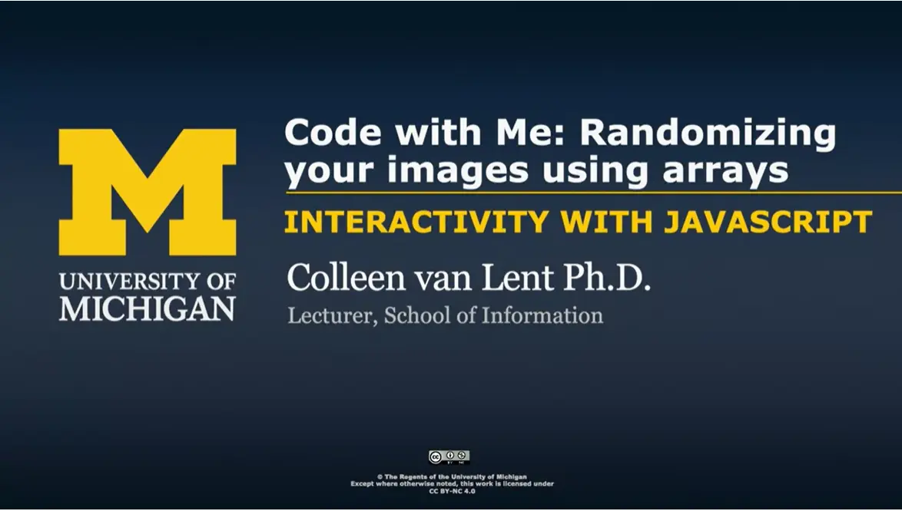
Hi everyone, let's do a couple Code With Me’s in a row just so you can start using your JavaScript to do things that are a little bit more practical. I know that earlier I did a demo with you where we used arrays and we kind of picked out one or two elements from the arrays, but it wasn't really anything that had to do with web design so much.
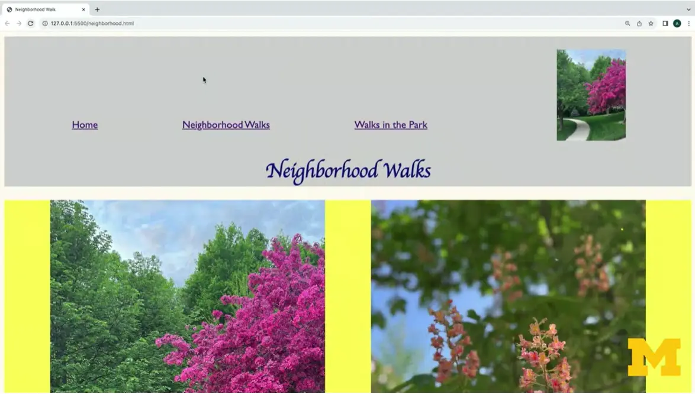
In this example, what I'm going to show you how to do is how to randomize your pictures using JavaScript, so let's take a look. I'm going to refresh the page here to give you an idea of what I'm talking about. A
And what I'd like you to do is keep an eye on this one image up here in the corner each time I load the page. This time I've got a picture with a tree, while before it was kind of that pink, beautiful picture. When I reload it again, up, I've got a picture of my dog Bacon hanging out near the woods and I'm going to do it one more time. And up, look at that, I didn't get any image at all. Do it one more time and I've got that kind of pink tree again. What I've done is I've written code in JavaScript that will pick an image randomly from an array of image names.
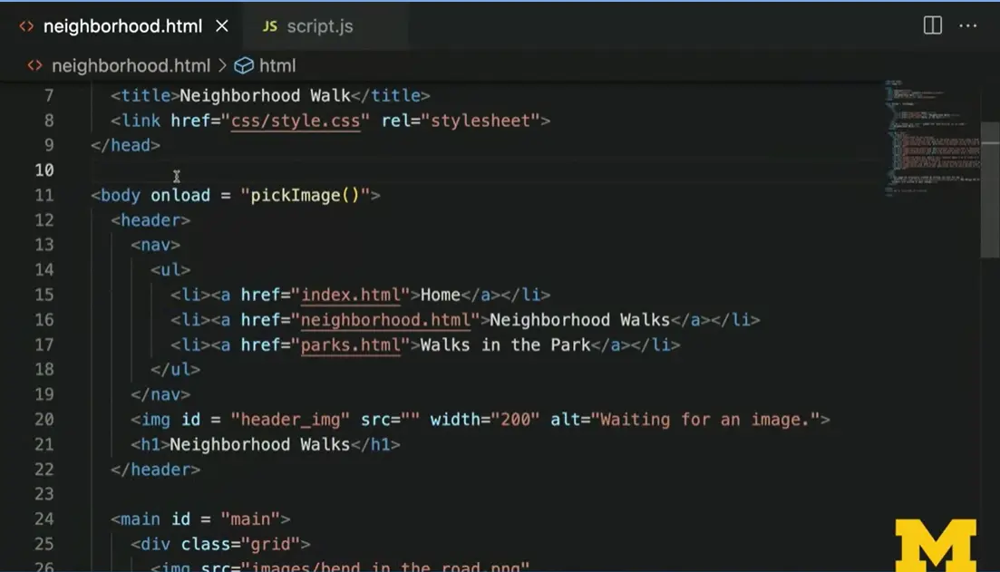
Let's code this together. Let's start with the HTML code. Right here on line 11 I want you to notice that I've put in an event and a function. And I've said when the body of the page loads, I want you to run the function pickImage(), all right?
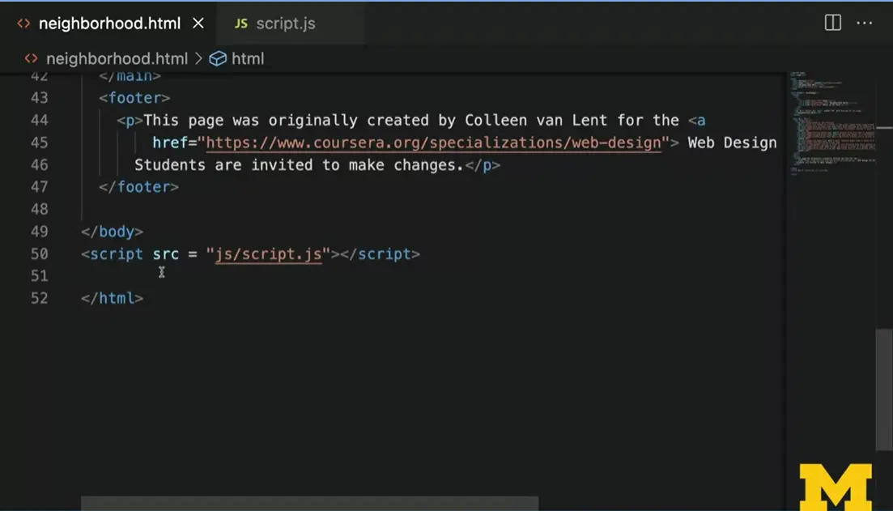
And just to double check, I'm going to scroll all the way to the bottom of the screen and you can see that I've remembered to include a link to my JavaScript file that has that function. Let's pop back up to the top. What is pickImage going to do? Well, pickImage.
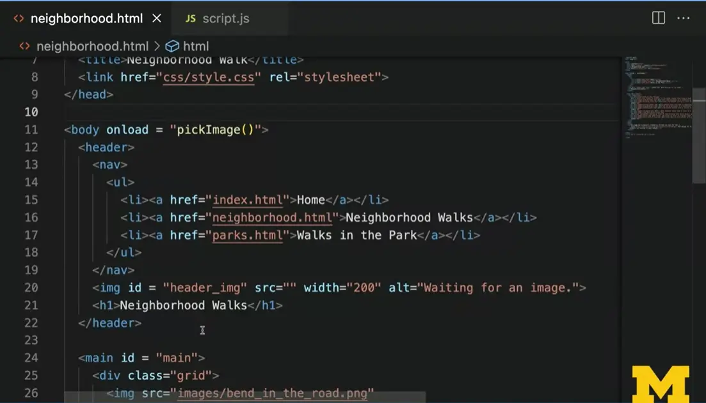
PickImage is going to go to this image element right here, the one with the id = header_img and it is going to update the source to basically a somewhat random image. Let's see how we do this in the JavaScript file.
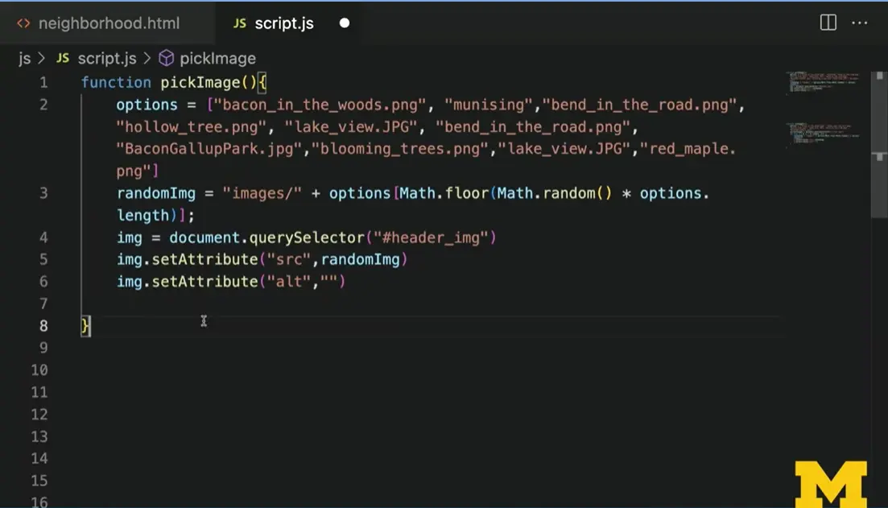
The function pickImage starts off with an array that I have called options. And what I did is I went through many of the images in my folder, but not all of them and just put them in as strings, so I have “bacon_in_the_woods.webp”, “munising”, “bend_in_the_road.webp”. And I have 1, 2, 3, 4, 5 different images to choose from.

Again, where did I get those images from? Well, I just peeked over here in my Images folder and I picked some randomly.
All right, so again, all I have here is an array of strings, and each string is the name of one of my pictures. All right, well, we know that we have all the names, how can we grab just one of those names, all right? Hang with me here, we're going to be doing some math, we're going to be doing some funky JavaScript, but there's just one line of code you need to understand, and it's right here. JavaScript has a random function right here called Math.random. And what it will do is it will return a number between 0 and 1, so 0.25, 0.5, 0.75, we want to take that number and we want to take the length of this array. If I have an array with five file names in it, I want to pick a number such as 0, 1, 2, 3 or 4. I don't want to go beyond 4 because that's too big, all right? And I don't want to go less than 0 because that's too small. I find out how long the array is using options.length, then I multiply that by a number between 0 and 1. And then the last little thing it does right here, this Math.floor, that's going to change it into the integer, all right? It's kind of funky, there's some math going on, trust me on this, all right? So now this part of the code picks either “bacon_in_the_woods” or “bend_in_the_road” or “lake_view”, perfect. But remember, in our HTML code, we need to have that folder name too, right? All of our images are in a folder called imgs, so we take images and we concatenate, that's the fancy word for squish together. We concatenate the word images/ with one of these file names, now we're going to go in and I'm using document.querySelector and I'm using "header_image". Again, remember, if you use document.getElementById, you wouldn't need this hashtag, but I do. So, I've grabbed that one little element in the DOM and then I set its source attribute to whatever my random image is. And for now, I'm setting the alt attribute to blank. This isn't the best for accessibility wise, but it is really just a decorative image. And by including the alt attribute, I'm still saying, "hey, there's an image here, but it's not important, I'm letting you know that it's really something you can skip over."
Let's take a look now at this working in process again. This time when we look at the page, I want to have Inspect Element open, so I'm going to do my Inspect. I'm going to narrow in on this image and I'm going to make it a little bit bigger, hopefully to make it a little easier for you to read. You can see, however, that currently the image is “bend_in_the_road”, let's refresh the page. This time that's changed into “hollow_tree.webp” I'm going to refresh. Did you notice something, did you notice that the image is missing? This happened earlier too, when I was doing my demo, there's no picture there, so let's head over to the console. And in the console, you will see that I get the error that “Munising” actually just isn't found. “images/Munising” isn't found, it's a 404 error. Okay, well, I must have had a typo somewhere, so let's go back into my code and we'll investigate the script, that JS file.
Here we are in line 2, and we can see that yep, I forgot to include the file extension, I don't remember what it is. It was .jpg, so I need to replace this with “munising.jpg”. All right, let's go back and try this one more time. All right, let's start refreshing again and see if we get that same error or if I'm able to get a picture of Munising to show up, there it is right there. Just to double check, I'm going to go in, and now I can see that the images/munising.jpg is correct, okay? Hopefully this demo shows you that there are some real-world applications to you applying JavaScript to your page. And it only takes few lines of code to do something that will make your page a little bit more unique. Have some fun with this and get your hands dirty, use that Inspect Element, and good luck.
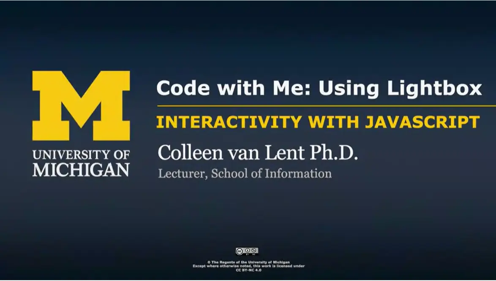
Something I say often about my Web Design for Everybody classes is that it's unlikelythat you're going to go off and become a professional web developer when you're done. Some of you may, that's great. But a lot of you are mostly just looking to become a little bit more knowledgeable about existing tech and that might include existing packages and tools out there that you can use. So it is true that it's way more common to use code from others than to write your own. And one of my absolute favorites is code for creating lightboxes. So today I'm going to walk you through how you can implement a lightbox in your existing code using somebody else's JavaScript and CSS. Let's take a look at this lightbox project. For those of you who are not familiar with what a lightbox is, let me show you an example. I'm going to click on this picture right here and as you can see, as you click on the image, the image actually pops up into a much bigger form. I'm going to click out this X and I can click on this second image as well. If you notice, it's really small, but at the bottom they even include an optional caption. These are considered kind of individual images. You can also put your images into a set like these four images here, where when I click on the first one, not only does it show the caption at the bottom and the X to leave the image, there's also a small chevron or arrow to go to the next image or to go back to a previous image. What's great about this code is that all of the JavaScript and all of the CSS for the lightbox is already created for you. Let me show you how you can actually implement it in your code. I'm going to start by scrolling down here a little bit and they mentioned that there's a number of ways to get started. For most of you, I think the most common approach is going to be to click on the link to GitHub to get their code. In order to get the code, you would go to Code, Download ZIP. While that's happening, I want to talk to you about some of these files and folders. The most important one that you will need is called the "dist" folder. Dist is a really common naming convention, it stands for distribution. So if you're using other people's code and you're a little overwhelmed by all the folders and files, this is usually the one folder you really need. Although, the examples folder is usually a little bit handy as well. I'm going to go back to the instructions, as we go through the rest of the steps, let me zoom in a little bit because the smallest typo can kind of throw you off. Once you've downloaded the code, and maybe you'd want to look at the examples, but we'll skip it right now you will notice that they mentioned that inside the distribution folder, you're going to want to link to their CSS and their JavaScript. This is the tricky part. In the example, it says path/to/lightbox.css. They don't actually mean path-to, they mean whatever the name of the folder is. So for us, it's going to be dist/css. Same here, when people talk about path/to, that's a shorthand, that's not actually the folder name, we're going to be using dist.javascript. The other thing that you might kind of read over quickly is we tend to be beginner coders here in our Web Development for Everybody. So it's unlikely that you're already using JQuery, which means we need to make sure we use any of their code that says lightbox plus JQuery. Don't worry, I'm going to show you all this. But I just want to point it out when you're going through the documentation, okay? Here is the format, what we are basically doing is turning every image on our page that we want to be part of the lightbox into a link, right? Instead of just being a regular old image, we want to be able to click on that image and then open up the image in a way bigger fashion, all right? So our new structure is going to be every place we used to have an image, we are going to put an <a> tag around it and that <a> tag should go to the image. Include this special attribute called data-lightbox and the special attribute called data-title. The data-lightbox lets the browser know whether you want all of the images to be linked together or whether they should be separate. So if you notice in the image sets, they gave everything the same data-lightbox. That's it, that's all the documentation we're going to go through. Let's go back to one of the pages we've been using in this class earlier so you can see how I implemented it. Let's start off by looking at my folder structure. I still have my css folder, my images folder, my js folder, but I've added a new file called lightbox.html. It's just a kind of shortened version of the neighborhood.html, so we won't worry about it too much. But now I also have the dist folder. I just copied and dragged to the whole thing. Inside the dist, they have their own css, their own images, because remember, for those little like chevron arrows, and their own js. Sometimes my students will ask me, they'll say, "well, why don't you just put other people's CSS in your CSS folder or other people's JavaScript in your JavaScript folder?" You can absolutely do that. But I like to keep it separate because I like to know if, when something's broken, if it was my code or their code. So all I've really done is add this dist folder right here, let's close up the folder. Now, as we go through, you can see instead of path/to the lightbox.css, I've used dist/css/lightbox. I'm going to scroll all the way to the bottom, and instead of having path/to/js/lightbox, I've done the dist/js/lightbox-plus-query. So I'm going to save this for just a second, and I'm going to open it up. What we have here, as I mentioned, is just an abbreviated page where I only have four images. And right now, these images, I'm clicking on them, don't do anything, all right? I've connected to the CSS and I've connected to the JavaScript. But now it's time for me to update my html. Let's take a look at that very first image. What I needed to do was I needed to add an <a> tag around it. And if you remember, the href for that tag should be the exact
same thing as the image itself. We want to click on the image and then open up that image in its own window. I have my data-lightbox, I've called it =images, and I've added my data-title="Caption 1", all right? Just so I don't have to scroll back and forth for you, I'm going to hit option Z for a second, so it wraps all my text, all right? So I've got my href, my data-lightbox images, and my data-title. Let's save it and let's take a look. All right, I've refreshed my page and I'm going to click on the first image. Notice, even if you can see it, it might be a little hard. When I put my mouse over the cursor changes to show that this isn't just an image. It's an image that's a link that doesn't happen to the other ones. So when I click on it, everything popped up and I got my Caption 1. Let's add this to the other images as well. It is super, super, super tempting when you're doing this to add this a link to all your images, right? Rather than just testing one at a time. But you always want to test at least one of them once just to be sure that you don't have a typo, right? So normally I add it to the first one and then kind of copy and paste it for the other ones. So I'm going to go ahead and I'm going to save this and let's look at it again, all right? Let's try clicking on the first image. Not only does it pop up, but I now have the chevron to go to the next image, the next image, and the last one, and I could go back if I wanted to notice. If you're trying to do this along with me and the picture is popping up, if things don't look right, that probably means you didn't link to the CSS correctly. If things aren't functioning correctly, then that means you probably didn't link to the JavaScript in the right way. So use that Inspect Element so you can look in and make sure all your files are connected. But mostly realize how little code it took for me to take something that I've created and kind of bump it up a notch by using code that somebody else created. That's really what the web is about. All of us working together to create things that we can all enjoy.
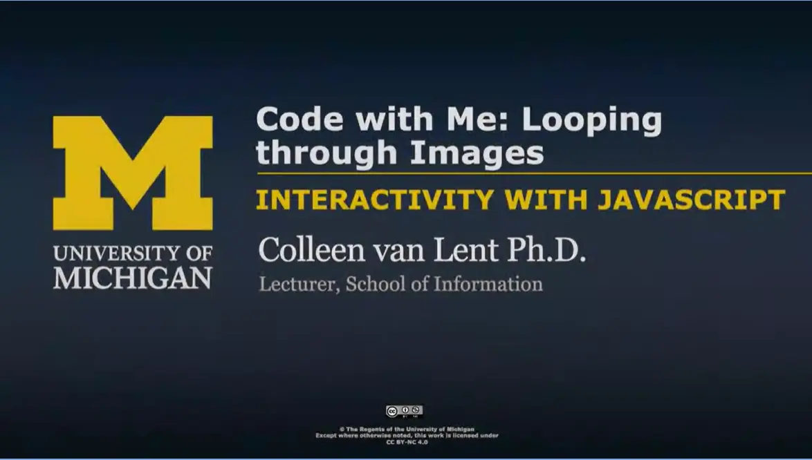
Hi everyone. Earlier we did a Code With Me where we wanted to make one image, a random image. Now, let's talk about what we would do if we want to use JavaScript to update numerous images. For instance, in this example, I have now changed the code so that I get three somewhat random images each time I load it. It's not super random because I didn't give it a lot of options, but you can see that it's three different pictures each time. Let's take a look at the code to see how we do this. Let's start off by looking at our body tag. Once again, I've used the onload event, but this time I've used a function called "setImages()". If we scroll a little further, we can see from the structure of the page that the images I want to change are the images that are inside the flex class. Right now I have 1, 2, 3 images in here. Then at the very bottom, I'm using my script tag to link to my JavaScript folder. Let's check out the JavaScript code. Once again, I've created a variable called options, and in that array, I have listed a number of different images that are available to this file. Here's where things get a little bit different. On line 26, I've made another new variable called currentImages. Again, you want to use good mnemonic names, meaning when I look at the variable name, I should know what I'm trying to save here. What I'm trying to save is all of the images that are currently in the flex class. So I've used document.querySelectorAll(".flex img"). This is going to return an array of images. We can't just start using current images and trying to get the source attribute or the alt attribute. It doesn't know how to do that. We need to access each image individually, and this is where we will use looping. I start off with my for loop. You always want to use the keyword for. Then I'm going to create a variable called i. It's something we do a lot. I'm going to loop through each image in current images, and each time i is going to go up by one. Current images, if you remember on our page, there were three images. So that means I will go from 0, 1, and 2. If I had 10 images in that class, it would be 0, 1, 2, all the way up to nine. I like to add console.log messages. They make me feel better. They help me figure out, is my code running? Is my, oops, that shouldn't say isSecure. I really just want to say i. I want to print out that 0, 1, 2, 3, etc, so I can make sure my loop is doing things as I expected. Now, the code should look pretty similar. I'm going to grab a random image and assign it to the variable random image. It's the same thing we did earlier. But now, instead of using something like currentImage, its currentImages[i], the first image, the second image, the third image. Let's take a look and I'm going to go back to the website one more time. Once again, let's turn on Inspect Element to see what's going on. I go into my Inspect and I want to pick the console tab. Do you notice over here? It says Image 0, Image 1, Image 2. That's from that console.log message I was using. I'm going to refresh again. And as we go through, uh oh, if you notice. Oh, I thought I had mistake there for a second. I thought it was saying it to the same image every time. So I didn't write the greatest code, right? I could have gone in and written my random codes that it generates a random image each time but I keep track of the ones I've seen before. Or I could have made sure that there were like 15 or 20 images, so the chance of having a duplicate was less likely. But when I'm writing code for all of you, I don't like it to be too big. I want to show you one more thing. What I've done here is I've changed my style, so all my images have an opacity of 0.75 unless I hover over it. Let's think about accessibility for a second, and think about what it means when we add hover to our style sheet. That means people who are using a mouse can get that functionality, but people are using the keyboard cannot. Let's use looping to also add a bit more accessibility to our page. Back here in my HTML code, I can see that none of my images have an attribute called tab index. Tab index is what allows people to use the keyboard to access an element. So I could go in here and I could start adding tabindex="0" to all of my images. In this case, I would only have to do it for three. But imagine instead that I had something like 20 images or 40 images, it would be a real pain to have to go in there and add that to each one. So I'm going to go back to my JavaScript. Let's add two more lines of code here. Oops, don't do that. Let's go in. What I can do is I can say, currentImages. Instead of the source, I'm going to use a new function called setAttribute(). I'm gonna say, let's set the "tabindex" equal to 0. I'm going to save this. I'm going to go back to my page and go back here and save this too. So you can see I did not add tabindex. Let's go back to the website. Now that we're here, I'm going to refresh, and I'm going to go in and I'm going to check out these elements. Go right here, Inspect. We can now see that each one of these images has a tabindex="0" in there. So my last step actually is to go back and update my style sheet as well. Here I am in my style sheet and I'm going to say, "anything I say people can do with hover let's also let them do it with focus." Back to our page. Now that I'm here, I'm going to begin to tab. It's going to go through my links. Now you can see it is also allowing me to tab to the images as well. Hopefully this is showing you that using looping is a faster way to update your code. Not just in this example where I had three pictures, but imagine if I'd had 15, 20, or in the case of your future homework, when you have six or more images. Being able to loop and update the code allows you to do things more quickly and avoid a lot of those common typos that at least I happen to do all the time when I'm updating my code. You're going to be using this concept in the next couple of weeks, so make sure that you're going in and you're practicing, you're trying this code. And if need be, look things up on your own. There's always references out there. Good luck.
As you are able to add additional capabilities to your pages, make sure that you aren't doing it at a cost to accessibility or usability. Reacting to mouse events is a great example. There are a number of great looking sites out there that are inaccessible because content is hidden until an event is triggered. If you are going to add Interactivity, make sure it is accessible to keyboard users as well.
If you plan on adding HTML forms to any future sites I also highly suggest that you make sure that you are using labels and placeholders on your forms. The Web Accessibility Initiative has some great resources for learning about this.
The goal of the final project is to create your own accessible, interactive photo gallery. Building on concepts you have been learning in the course you will create your own HTML file with images and alternative text and then add the code to call functions to react to common events such page loads, mouse movement, and keyboard access. In addition to reusing the functions from the earlier homework you will want to write code to automatically add the tabindex attribute to your figures.
Throughout the process make sure to validate your code on W3, Wave, and aXe.
Once you have completed your assignment you will complete peer reviews. Because there are two or three challenging components to this assignment I hope you will learn from seeing the different approaches.
Use the code from the Interactive Photo Gallery as your starting point
Update the code to use six images of your choice, making sure to include alternative text for each.
Validate your site on The W3C Markup Validation Service.
Validate your site using the Wave validator site or browser extension.
Validate your site using the aXe browser extension.
Add the listeners for onfocus Event and onblur Event using the same pattern I gave you for the onmouseover Event and onmouseleave Event. (Don't delete those events though!)
Test your site's functionality for mouse movement.
Add the listener for onload – deciding what you want to call the new function
Add the new function for adding the tabfocus attribute
Add a console.log message to make sure that your event triggers
Write a for loop to loop through each image
Add the tabindex attributes
Test your site's functionality for keyboard access.
Host and share your site
Complete your peer reviews.
Your project will be graded by the careful examination of your code by a peer as well as the The W3C Markup Validation Service Tool and the WAVE Web Accessibility Evaluation Tool. Your peers will look for the required functionality using both the mouse and a keyboard.
There are at least six images
Each image has unique alternative text
When the mouse is over a smaller image the large image is updated with the alt text.
When the smaller image is in focus the large image is updated with the alt text.
When the mouse is over a smaller image the large image is updated with the proper background image.
When the smaller image is in focus the large image is updated with the proper background image.
When the mouse is removed from a smaller image the large image is updated with the original text. (Hardcoding is expected here.)
When the focus is removed from the smaller image (when it is in the blur state) the large image is updated with the original text. (Hardcoding is expected here.)
When the mouse is removed from a smaller image the background for the large image is updated to an empty URL. (Hardcoding is expected here.)
When the focus is removed from the smaller image (when it is in the blur state) the background for the large image is updated to an empty URL. (Hardcoding is expected here.)
The tabindex property was added using JavaScript, not hardcoded into the HTML.
The site returns no errors from the The W3C Markup Validation Service Tool
The site returns no errors from the WAVE Web Accessibility Evaluation Tool
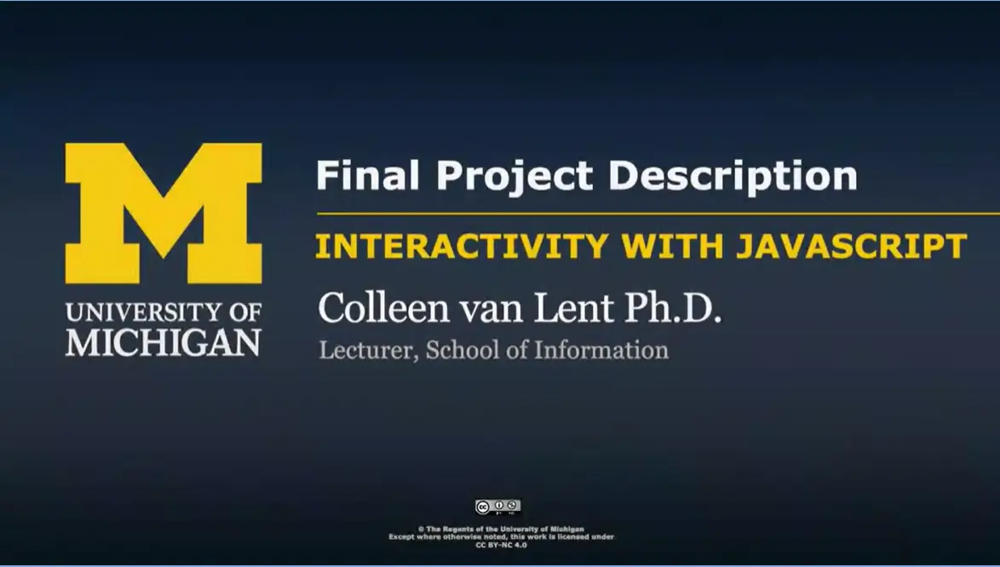
Hi everyone. Let's talk about the final project. In an earlier assignment, you added the ability to hover over images and display their source and alt texts in a different div. In this assignment, you're going to expand upon that same project. But now you are going to use at least six of your own images, and we're going to make it an accessible site by incorporating tabindex as well. I'm going to add some additional requirements that you cannot change the HTML to add tabindex, you must use JavaScript looping to add the attribute, and just as we wrote a Undo for when we were on mouseout and we did like change when your mouseover, Now you are going to use the focus and blur events so that keyboard users have the same capabilities as any mouse users. Let me show you an example. Again in your earlier example, there were just three images, and I gave you those images. When I would put my mouse over, we would get the updated image and the alt text. When I took my mouse off, we would get back to the original, over, out, over, out. In the new version, you will add at least three additional images of your own for total of six images, and we're going to use the Tab key to that people can use the same type of functionality as with the mouse. Watch as I begin the tab, I'm going to tab again. I'm going to tab a third time, and now watch what happens when I tab this fourth time. It goes back to the original, a lot of students get into this trap where they only write an event for when it goes in focus. But the opposite of focus is something called blur, make sure that you code for both. As always, we're going to ask you to follow some general guidelines. One, makes sure that you're using your own images, preferably something unique that your peers will enjoy grading. Validate everything, make sure you're using W3 to check your HTML syntax, make sure you're using Wave to make sure that you have alt text. Make sure you are using aXe just to check for anything else. If there are any aXe errors that I left in there, I would encourage you to go in and fix them up so that your code validates. Do your peer grading with compassion too. You're going to want to make sure that you're giving really good feedback, if somebody does something incorrectly. You know what? Great feedback when people do things correctly, that's great as well. Leave those helpful comments so that other people can learn from you, and you might be surprised by how much you learn from thinking deeply about what you're seeing in other people's sites. I hope you have some fun with this. I hope it's something that you are proud of and that you can share with others, and that you leave this feeling like you've really accomplished something and you learned enough about JavaScript that you can go on with some confidence.
Use this Gallery space to share your final project with others in this course. This is not required, but will help others that take the course and create a sense of community. Also, please take some time to review the work of your peers and offer thoughtful comments. This is not a graded submission.
Note: The first time you launch the Gallery Tool, you will be asked to set up your Gallery profile by providing some basic information and selecting your sharing settings.
On the left side of the screen, click “Upload Submission” and fill out the required information:
Title of your submission
A brief description of your submission.
A link to your hosted project.
Scroll through the submissions to see the various examples that your peers have shared. You can also sort the examples by using the available filters near the top right-hand corner of the Gallery. As you explore the submissions, we encourage you to leave comments and feedback on the submissions you view.
This course uses a third-party app, Final Project: Optional Submission Gallery, to enhance your learning experience. The app will reference basic information like your name, email, and Coursera ID.
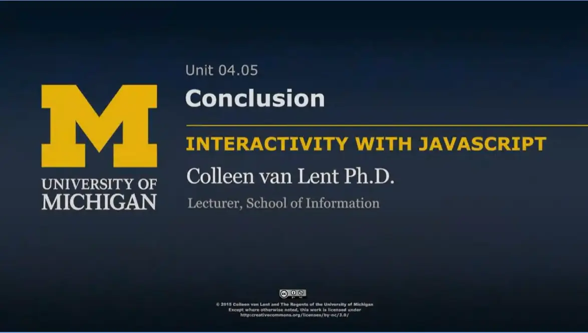